SpaceBay documentation
SpaceBay turns your WordPress site into a community: members join spaces, post, comment and react in a fast portal that works on desktop and mobile, in light and dark mode.
Version 1.1.0 · By WPAnchorBay
SpaceBay is free on WordPress.org. SpaceBay Pro is an optional add-on with calls, two-factor login and a few tools for community managers. Sections and settings that need Pro are marked Pro. See Free and Pro.
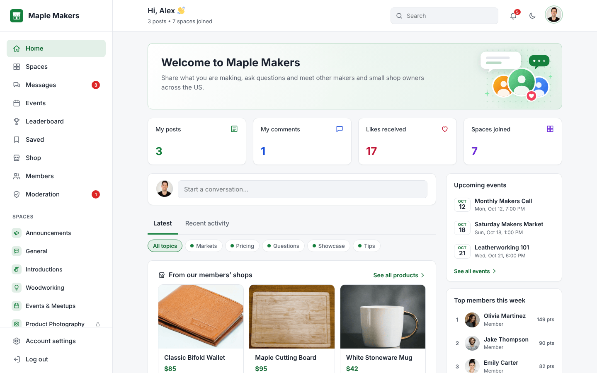
Requirements
| Item | Minimum |
|---|---|
| WordPress | 6.2 (tested up to 7.1) |
| PHP | 7.4 (tested up to 8.4) |
| MySQL / MariaDB | 5.7 / 10.4 |
| Permalinks | Any. Pretty permalinks give the community its own address such as /community/. |
Free and Pro
SpaceBay is a free plugin on WordPress.org. SpaceBay Pro is a paid add-on. Everything not listed as Pro below is in the free plugin, with no limits on members, spaces, posts or events.
| Feature | Free | Pro |
|---|---|---|
| Spaces and groups, feed, posts, comments, likes, saved posts, topics and hashtags, search | Yes | Yes |
| Profiles, member directory, notifications and emails | Yes | Yes |
| Private messages and group chats | Yes | Yes |
| Voice and video calls in chats | No | Yes |
| Community login, signup and password reset pages, members-only mode, limits on login attempts | Yes | Yes |
| Signup form with name, email address and password, and an optional “I agree to the terms” tick box | Yes | Yes |
| Signup form builder (choose fields, required fields and order) | No | Yes |
| Custom profile fields | No | Yes |
| Two-factor authentication (authenticator app, codes by email, backup codes) | No | Yes |
| Points, levels, leaderboard and points history | Yes | Yes |
| Nine ready-made badges, each one switchable | Yes | Yes |
| Badge editor (create and edit badges), the hand-given badges Founding member and Helper | No | Yes |
| Giving badges and adding or taking away points by hand | No | Yes |
| Events with going, maybe and can't go answers, calendar, My events, past events, Add to calendar, notifications for new, changed and cancelled events | Yes | Yes |
| Event place limits (“places left”, full events) | No | Yes |
| Event reminders before the start | No | Yes |
| Member shops: a Shop tab on profiles, products that link to the seller's own store, approval by admins, products in the feed and in spaces, a Shop page | No | Yes |
| Moderation, reports, blocked words, member approval and suspension, community moderators | Yes | Yes |
| Setup wizard, branding, light and dark mode, privacy tools, REST API, hooks, template overrides, WP-CLI sample content | Yes | Yes |
Getting Pro. Buy SpaceBay Pro at wpanchorbay.com/spacebay-pro and download spacebay-pro.zip from your account. Pro is an add-on: it needs the free SpaceBay plugin (1.1.0 or newer) installed and active, and WordPress 6.5 or newer. Pro has no licence key. SpaceBay Pro is only sold on wpanchorbay.com.
Updating from 1.2. In version 1.3.0 the features marked Pro moved to SpaceBay Pro. Your settings and data are kept. Until Pro is installed these features are switched off: members log in with their password only, chats have no call buttons and the signup form shows the standard fields. Install Pro and they come back as they were. If your site used two-factor authentication, calls or custom profile fields, the Plugins screen shows a notice about this that you can dismiss.
Installation
SpaceBay (free)
- In WordPress go to Plugins → Add New Plugin and search for “SpaceBay”. You can also download the zip from WordPress.org and use Upload Plugin.
- Click Install Now, then Activate.
- WordPress opens the SpaceBay dashboard. Your community is live at
yoursite.com/community/.
On the Plugins screen, SpaceBay has a Settings link and, under its description, Documentation and Get Pro links. Get Pro is hidden once Pro is active.
SpaceBay Pro Pro
- Install and activate the free SpaceBay plugin first.
- Download spacebay-pro.zip from your wpanchorbay.com account.
- Go to Plugins → Add New Plugin → Upload Plugin, choose the zip, click Install Now, then Activate.
Getting started
The SpaceBay menu in the WordPress admin has five pages: Dashboard, Spaces, Topics, Members and Settings. The dashboard shows totals for members, spaces, posts and comments, the number of items waiting for review and members waiting for approval, and your community address.
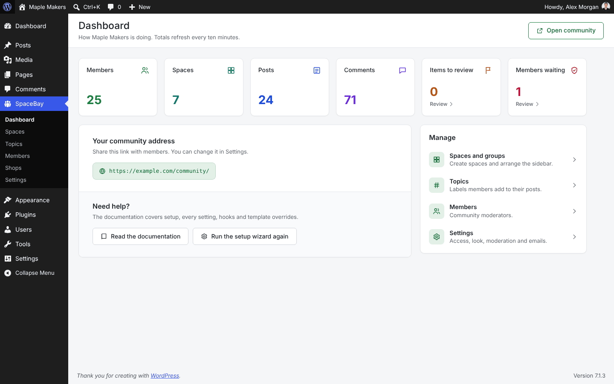
Setup wizard
The first time you open SpaceBay after activating the plugin, a short wizard helps you set up the community in five steps:
- Basics: community name, address and who can view it. If signup is off, the wizard reminds you to turn on Let people sign up under Settings → Login and signup.
- Look: logo, brand colour, colour mode and layout.
- Spaces: create starter spaces: Announcements (only admins post), General and Introductions. You become admin of each one. Spaces that already exist with the same name are skipped.
- Moderation: member approval, review of new posts and blocked words.
- Done: open your community.
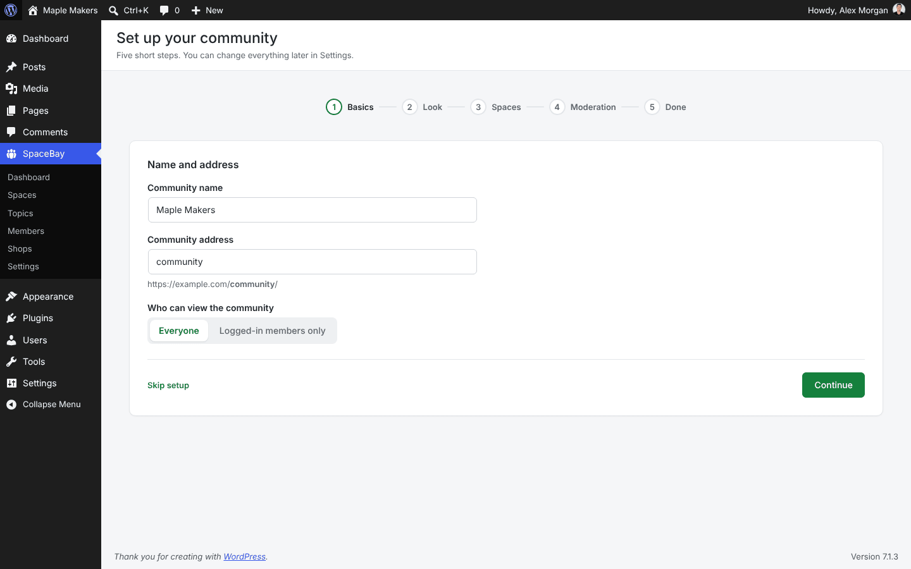
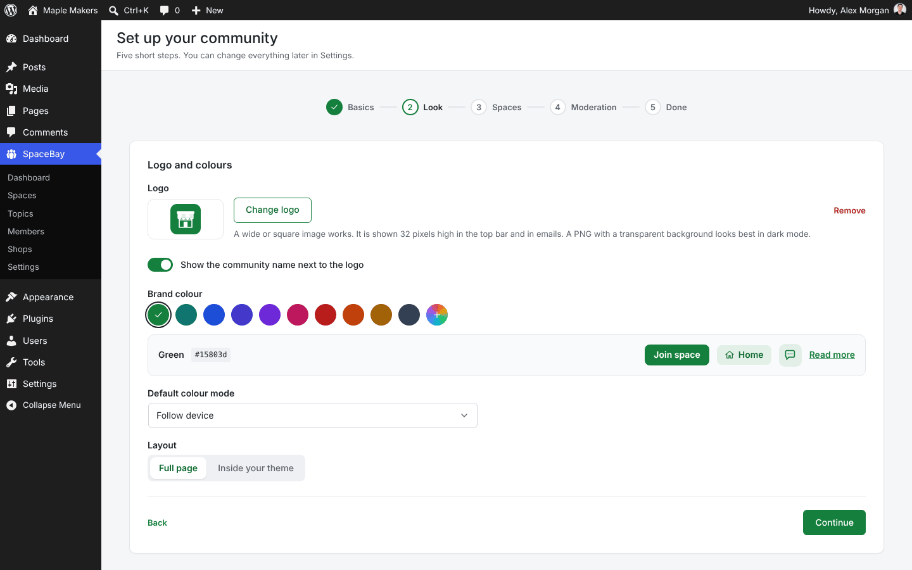
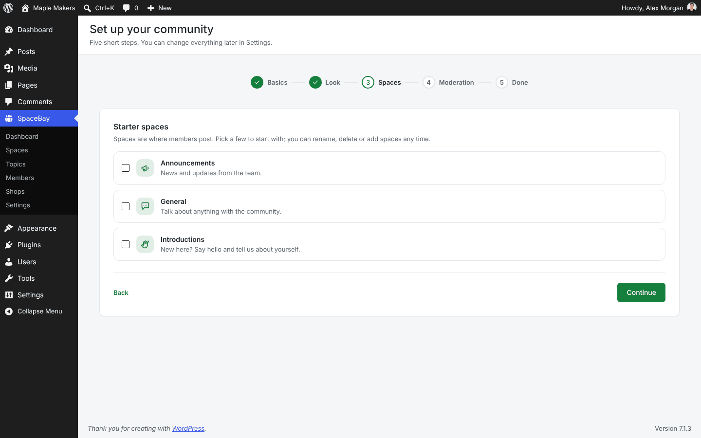
Select Skip setup to go straight to the dashboard. You can run the wizard again from the dashboard at any time.
Settings
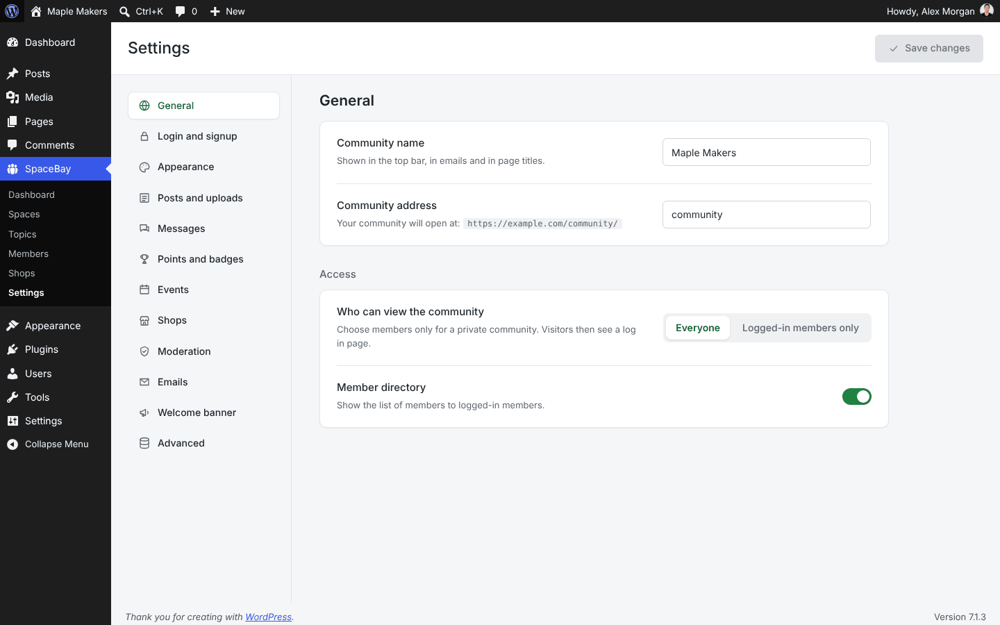
Settings are grouped into sections in the left column: General, Login and signup, Appearance, Posts and uploads, Messages, Points and badges, Events, Moderation, Emails, Welcome banner and Advanced. Change what you need in any section, then select Save changes at the top right. The button is active only when something has changed.
Settings marked Pro are added to these sections by SpaceBay Pro. Without Pro they are not shown, and what you saved before is kept.
| Setting | What it does |
|---|---|
| Community name | Shown in the portal top bar and the browser tab. |
| Community address | The part of the URL after your domain, for example community. Needs pretty permalinks. |
| Who can view the community | Everyone lets visitors read public content. Logged-in members only shows visitors the community login page. |
| Community login pages | Members log in, sign up and reset their password on pages that match your community. On by default. Turn it off to use the WordPress login page. See Login and signup. |
| Let people sign up | Opens the signup page. On a new site it follows the WordPress setting Anyone can register. |
| Terms page | Address of your terms. When an address is set, the signup form shows an “I agree to the terms” tick box that links to it. |
| Signup form Pro | Which fields are on the signup form, which are required, and their order, with a live preview. |
| Two-factor authentication Pro | Off (default), Optional or Required for everyone. See Two-factor authentication. |
| Require it for admins and moderators Pro | With Optional: accounts that can manage or moderate the community always need a code. |
| How members get their code Pro | Authenticator app or email (default), authenticator app only, or email only. |
| Layout | Full page shows the community as a full-screen app. Inside your theme places it between your theme header and footer. |
| Default colour mode | Follow device, Light or Dark. Members can switch with the moon/sun button. |
| Logo | Choose an image from the media library. It is shown 32 pixels high in the top bar and at the top of emails. In dark mode the logo sits on a white plate so dark text stays readable. |
| Show the community name next to the logo | Turn off when your logo already contains the name. |
| Brand colour | Colour of buttons, links, highlights, space icons and email buttons. Choose one of ten ready-made colours (Green, Teal, Blue, Indigo, Violet, Pink, Red, Orange, Amber, Slate) or any custom colour; the preview shows how it looks. Very light colours are darkened slightly so white text on buttons stays readable. Light tints for dark mode are worked out automatically. The default is SpaceBay green. |
| Space icon colours | One colour shows every space icon in the brand colour. Each space uses the colour chosen for each space, and the space form then shows colour swatches. |
| Private messages | Turns the Messages page on or off. On by default. See Messages. |
| Who can message whom | Members who share a space (default), Any member, or Only admins and moderators. Admins and moderators can always message everyone and be messaged. |
| Allow group chats / Most people in a group | Lets members start named group chats. Up to 20 people by default (3–100). |
| Calls Pro | Off (default), Voice calls, or Voice and video calls. Needs HTTPS. See Voice and video calls. |
| Most people in a call Pro | 2–6, 4 by default. Every person sends sound and video to every other person, so big calls need fast internet. |
| STUN server Pro | Helps browsers find each other. The default is Google's free public server. |
| TURN server, username and password Pro | Optional relay for strict office or mobile networks. Members who make a call receive these details. |
| Member shops Pro | Settings → Shops. Off by default. When on: New products (Approve each product, the default, or Publish automatically), Products per shop (50 by default, 1–1000) and Shop page (adds Shop to the community menu, on by default). See Member shops. |
| Points, levels and badges | Shows points, levels and badges on profiles and next to names. On by default. See Points, levels and badges. |
| Leaderboard | The Leaderboard page with this week, this month and all time. On by default. Hidden profiles are left out. |
| Points for each action | A published post (5), a comment (2), a like from someone else (1, goes to the author), a visit once a day (1), answering “going” to an event (2). 0 to 100 each; 0 turns that action off. |
| Level names | Up to 12 levels, each with a name and the points needed. The first level starts at 0. Default: Newcomer, Member (50), Regular (200), Contributor (500), Veteran (1,000), Legend (2,500). |
| Badges | Switch each of the nine ready-made badges on or off. |
| Badge editor Pro | Up to 40 badges. Add badges, rename them, and choose their colour, icon and rule: given by hand, or earned at a number of posts, comments, likes received, points, daily visits or events. |
| Events | Adds the Events page, the calendar and an Events tab in every space. On by default. See Events. |
| Who can add events | Space admins and moderators (default) or Members who can post in the space. |
| Reminder Pro | No reminders, or 1, 3, 24 or 48 hours before an event starts (24 by default). Goes to members who answered going or maybe. |
| Approve new members | New sign-ups wait for a moderator before they can post, comment or join spaces. See Member approval. |
| New posts | Publish posts right away, review the first post of each member, or review every new post. |
| Blocked words | One word or phrase per line, and what happens when someone uses one: hold for review, hide the words with stars, or refuse the post. |
| Hide content after this many reports | Reported posts and comments are hidden until a moderator decides. 3 by default; 0 turns it off. |
| Send notification emails | Emails members about mentions, comments, replies and space activity. Each member chooses which emails they want. On by default. |
| Sender name and email address | The From of notification emails. Leave the address empty to use your WordPress default. Use an address on your own domain so emails are not marked as spam. |
| Welcome banner | Title and message at the top of the community home page. |
| Delete all data when the plugin is deleted (Advanced) | When on, deleting the plugin removes all SpaceBay data. Off by default. |
The community portal
The portal is a fast single-page app. It works on phones, supports right-to-left languages and has a dark mode. The sidebar holds the navigation and the spaces list; the header greets the member and shows search, notifications, the colour mode button and the account menu. On Home, logged-in members see their own activity: posts, comments, likes received and spaces joined.
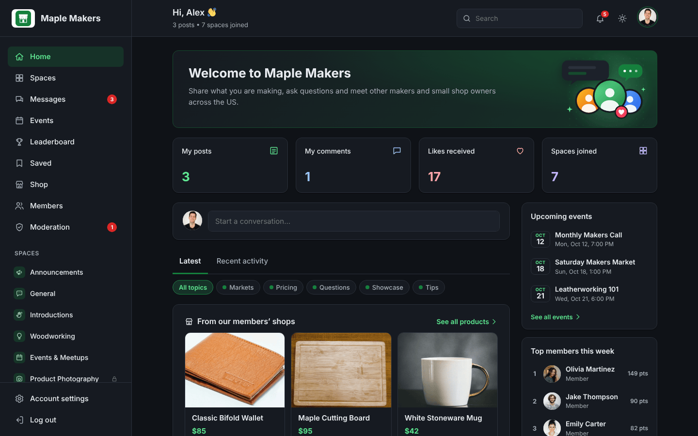
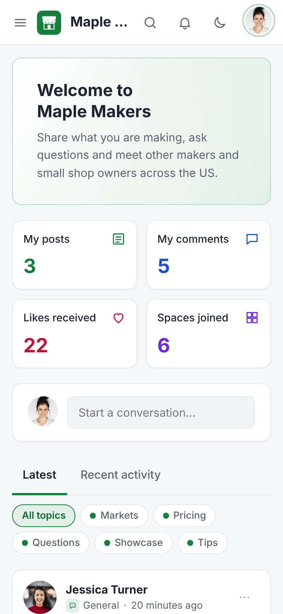
DONOTCACHEPAGE and no-cache headers), so members always see their own data.Login and signup
SpaceBay has its own pages for logging in, signing up and resetting a password. They use your logo, brand colour and dark mode, and work on phones.
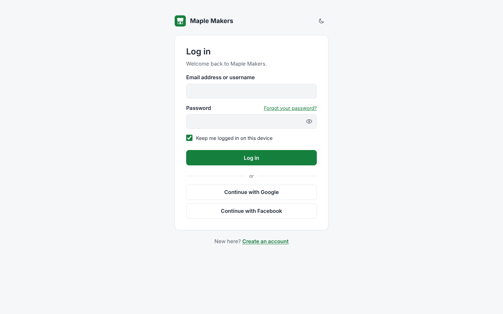
| Page | Address | What it does |
|---|---|---|
| Log in | /community/login | Email address or username and password, with “Keep me logged in on this device”. Members return to the page they came from. |
| Create an account | /community/signup | The signup form. New members are logged in right away and receive a welcome email. |
| Forgot your password? | /community/login/forgot | Emails a link that works for 24 hours. The link opens a page in the community to choose a new password. |
The Log in and Join buttons in the community lead to these pages. In a members-only community, visitors see the login page instead of the community. The WordPress login page (wp-login.php) keeps working, so you can always log in there as well.
The signup form
Go to SpaceBay → Settings → Login and signup and turn on Let people sign up. The signup form asks for Name, Email address and Password. Passwords need at least 8 characters.
Terms tick box. Enter the address of your terms under Terms page. The form then shows an “I agree to the terms” tick box with a link to them, and people must tick it to create an account. Leave the address empty to hide the tick box.
- The username is made from the email address (for example
emily.carter). - To check new members before they can post, turn on Approve new members under Moderation. The signup page then tells people that a moderator reviews new accounts.
- New members get the role set in WordPress under Settings → General → New User Default Role. The site administrator receives the usual WordPress email about each new user.
- On a network of sites, signing up only works when the network administrator allows new accounts (Network Admin → Settings → Allow new registrations).
To stop spam signups, the form has a hidden field that only automated signups fill in, and one network address can create at most 5 accounts an hour.
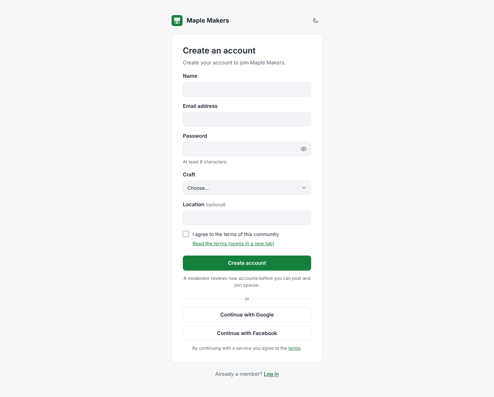
Building the signup form Pro
With Pro, Settings → Login and signup has a signup form builder.
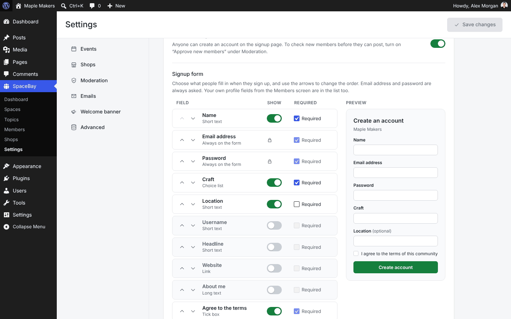
- Use the Show switch to put a field on the form or take it off.
- Tick Required when people must fill it in. Other fields are marked “(optional)” on the form.
- Use the arrows to change the order. The Preview shows the form as visitors will see it.
- Select Save changes.
- Email address and Password are always on the form.
- You can add Name, Username, Headline, Location, Website, About me and every custom profile field you created. What people enter is saved on their profile.
- Without the Username field, the username is made from the email address.
- Agree to the terms adds the terms tick box. Enter the address of your terms under Terms page to link to them.
Without Pro, the form goes back to the standard fields. The fields you chose are kept for when Pro is active again.
Password and security for members
Members change their password under Account settings → Password and security. They enter their current password first. Changing the password logs out their other devices.
Log in with Google or Facebook
Members can log in and sign up with their Google or Facebook account. The login and signup pages then show Continue with Google and Continue with Facebook under the form. Both are off until you turn them on.
- One button for both. Someone who used the button before is logged in. Someone whose email address already belongs to a member is logged in to that account, when Google or Facebook has confirmed the address. Anyone else gets a new account.
- When signing up is closed (Let people sign up is off), the buttons only log in existing members. A new person sees a message that the community is not open for new members.
- New accounts get the name and email address from Google or Facebook and a password nobody knows. To also log in with a password, the member uses Forgot your password? once. New accounts follow your settings like any signup, including Approve new members.
- With two-factor authentication Pro the member still enters their 6-digit code after Google or Facebook.
- Each service needs an app of your own. Creating one is free. Your keys stay on your site, and nothing is sent to Google or Facebook before a visitor clicks the button.
Set up Google
- In SpaceBay, go to Settings → Login and signup, turn on Continue with Google and copy the Callback address.
- Open console.cloud.google.com and create a project (or pick one).
- Go to APIs and services → OAuth consent screen. Choose External, enter your community name, support email and the address of your privacy policy, and publish the app.
- Go to APIs and services → Credentials → Create credentials → OAuth client ID. Choose Web application and paste the callback address under Authorized redirect URIs.
- Copy the Client ID and Client secret into SpaceBay and select Save changes.
Set up Facebook
- In SpaceBay, turn on Continue with Facebook and copy the Callback address.
- Open developers.facebook.com, create an app and choose the use case Authenticate and request data from users with Facebook Login. The email and public_profile permissions it needs do not need a review by Meta.
- Under Facebook Login → Settings, paste the callback address under Valid OAuth Redirect URIs.
- Under App settings → Basic, add your privacy policy address and a data deletion page, then switch the app to Live. While it is in development, only people added to the app can log in.
- Copy the App ID and App secret into SpaceBay and select Save changes.
If the community address changes (for example from http to https), the callback address changes too: update it in your Google and Facebook apps. Facebook accounts made with a phone number and no email address cannot be used; those people sign up with their email address.
Two-factor authentication Pro
With two-factor authentication a password alone is not enough to log in. After the password, the member enters a 6-digit code. Choose the policy under Settings → Login and signup:
| Policy | What happens |
|---|---|
| Off | Members log in with their password only. This is the default. |
| Optional | Each member can turn it on under Account settings → Password and security. With Require it for admins and moderators, those accounts always need a code. |
| Required for everyone | Every member needs a code at each login. |
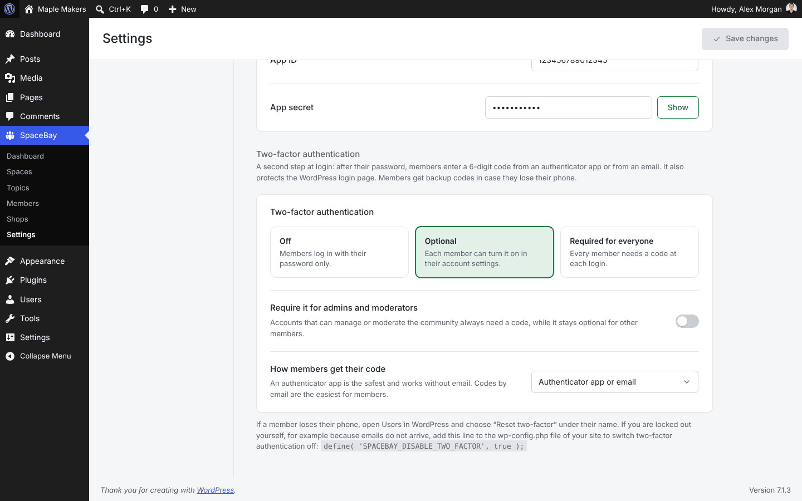
Members can get their code in two ways. You choose which ones are on offer:
- Authenticator app. The member scans a QR code once with an app such as Google Authenticator, Microsoft Authenticator or Authy (or types the key shown next to it). The app then shows a new code every 30 seconds. This is the safest way and needs no email.
- Code by email. A code is sent to the member's email address at each login. It works for 10 minutes. A new code can be requested after 30 seconds.
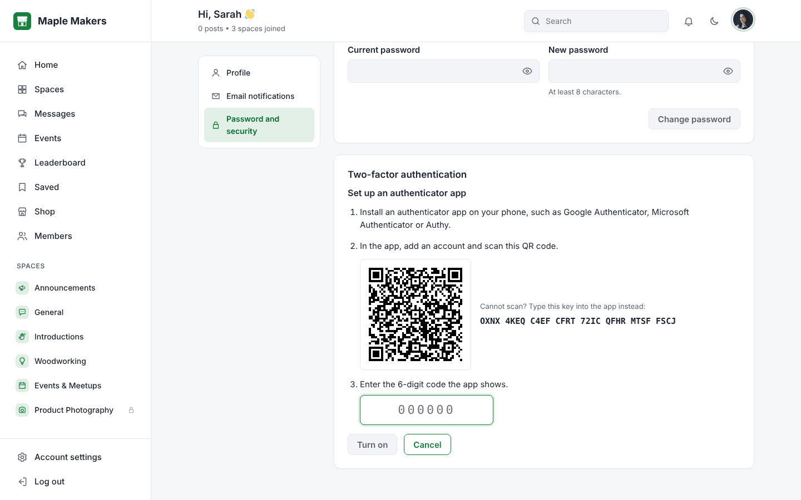
- Backup codes. When a member turns two-factor authentication on, they get 10 backup codes to copy or download. Each works once at login, for example when their phone is lost. They can create new codes at any time.
- Required members without an app. When email codes are on offer, they get a code by email until they set up an app. With Authenticator app only, they see a “Protect your account” page (
/community/secure-account) and must set up the app before they can use the community. - Changes need the password. Turning it on or off and creating new backup codes ask for the current password. Turning it on logs out the member's other devices.
- The WordPress login page is protected too. A member with two-factor authentication who logs in on
wp-login.php(or on a form of another plugin that uses the WordPress login) is sent to the code step before they are logged in. Password logins over XML-RPC are refused for these accounts; application passwords keep working for apps.
When someone is locked out
- A member lost their phone and backup codes: go to Users in WordPress, point at the member and select Reset two-factor. They can log in with their password and set it up again. With WP-CLI:
wp spacebay two-factor reset <user>. To see how a member logs in:wp spacebay two-factor status <user>. - You are locked out yourself (for example, the policy requires codes by email and emails do not arrive): add this line to
wp-config.phpabove “That's all, stop editing”, log in, fix the cause and remove the line again:define( 'SPACEBAY_DISABLE_TWO_FACTOR', true );
Before you require codes by email, check that emails from your site arrive: log out and use Forgot your password?. An SMTP plugin makes delivery reliable.
Good to know:
- Two-factor authentication needs the community login pages. When you turn those off, it is switched off as well.
- If you change the security keys (salts) in
wp-config.php, authenticator apps have to be set up again, because their keys are stored encrypted with those salts. - On a network of sites the policy is set per site. Someone who logs in on another site of the network where no code is required is logged in on every site, so use the same policy on each site.
- Plugins that log people in without the WordPress login form (some social login plugins) are not covered by the code step.
Spaces and groups
Spaces are where members meet. Create them in SpaceBay → Spaces, or with Create space on the Spaces page of the community. Space groups organise spaces under headings in the community sidebar. Use the arrows to change the order.
Each space has an icon from a set of 28 line icons (announcements, chat, ideas, events, photos and more), or the first letter of its name. Icons are drawn in one colour, so they always match your brand. Spaces created with an emoji in earlier versions show the matching icon automatically.
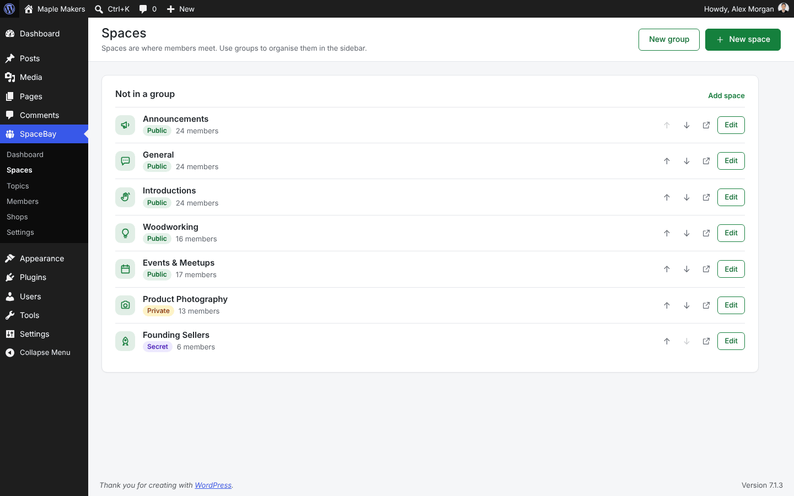
| Privacy | Who sees it | Who reads posts | How people join |
|---|---|---|---|
| Public | Everyone who can open the community | Everyone | Click Join space |
| Private | Everyone who can open the community | Members only | Ask to join, then a space admin approves |
| Secret | Members and invited people only | Members only | By invitation only |
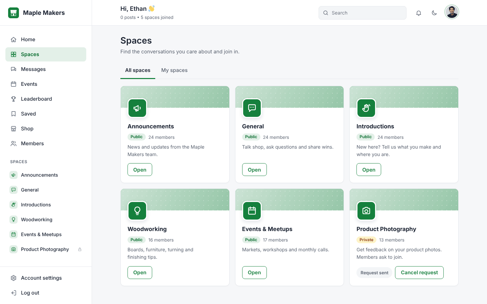
Space roles
| Role | Can do |
|---|---|
| Admin | Edit the space, approve requests, invite, change roles, block and remove members. |
| Moderator | Moderate content in the space. |
| Member | Read and take part. |
Whoever creates a space becomes its first admin. A space always keeps at least one admin. WordPress administrators manage every space, and only they can archive a space, delete it or move it to another group.
Managing a space
Space admins open the space and choose Manage to approve join requests, invite members, see open invitations, unblock members and edit the space details.
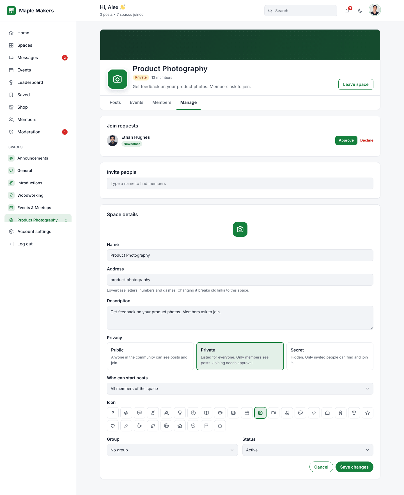
Archived spaces are hidden from people who are not members and do not accept new members.
Member directory
Logged-in members can browse and search everyone in the community on the Members page. Email addresses and login names are never shown. Turn the directory off in Settings with Show the member directory to logged-in members; WordPress administrators can still see it.
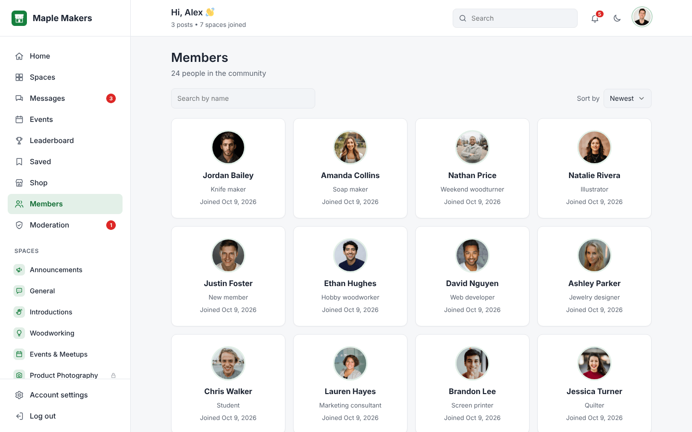
Profiles and account settings
Every member has a profile with a photo, a cover image, a headline, an About me text, location and website. With Pro, profiles also show any custom fields you add. Members edit it from the account menu → Account settings, or with Edit profile on their own profile page.
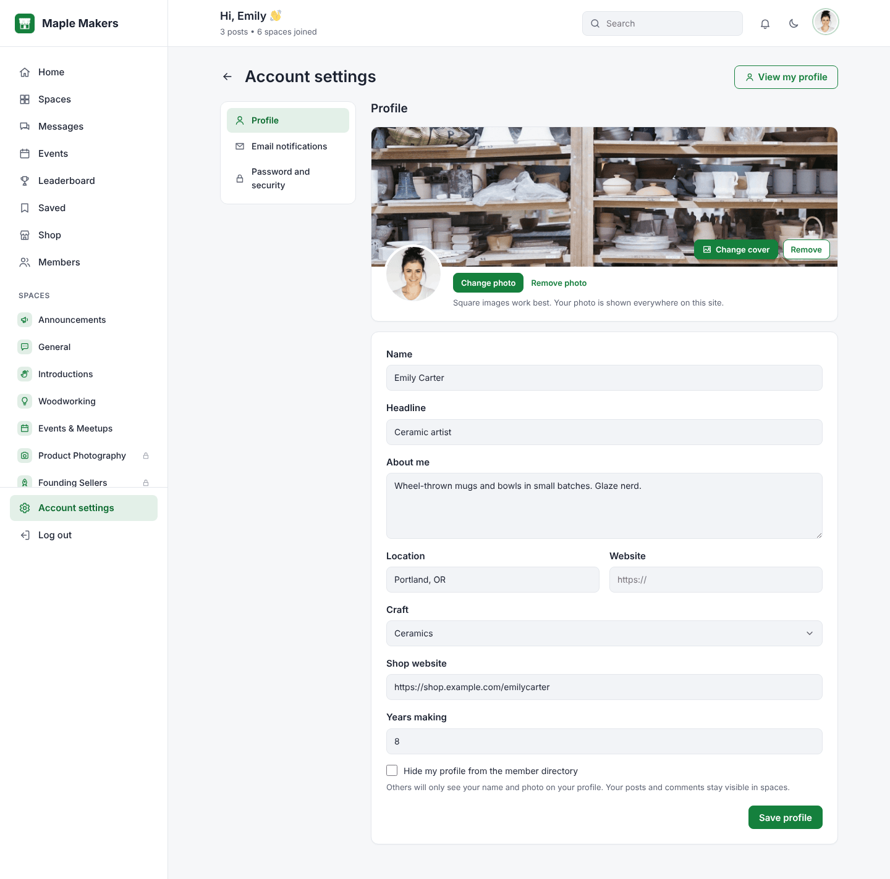
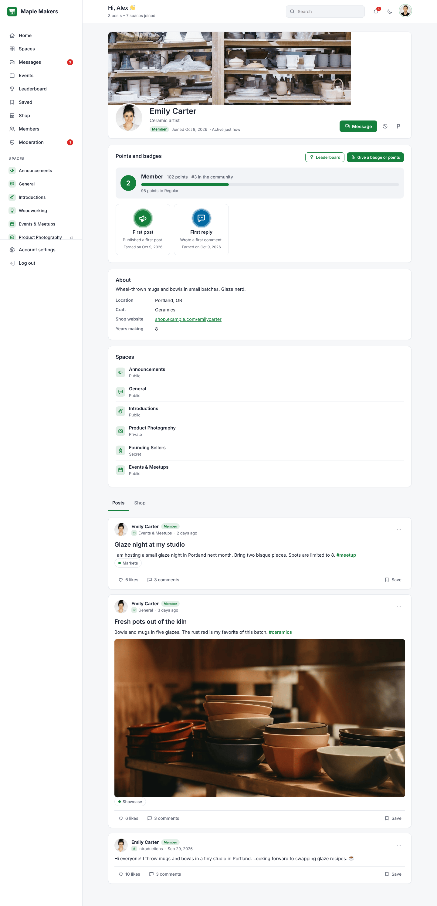
- Photo and cover. JPEG, PNG or WebP. Photos are cropped to a 400 × 400 square and covers to 1600 × 480. Images are re-saved by WordPress, so hidden data such as GPS location is removed. The photo replaces the Gravatar everywhere on your site, including WordPress comments.
- Hide my profile. Hidden members do not appear in the member directory or in search. Their profile page only shows their name and photo. Their posts and comments stay visible in spaces. Administrators can still see them.
- Last active. Profiles show when a member was last active in the community, updated at most every five minutes.
Custom profile fields Pro
Add up to 20 extra profile fields in SpaceBay → Members, such as Company, Country or Skills. Each field is optional for members.
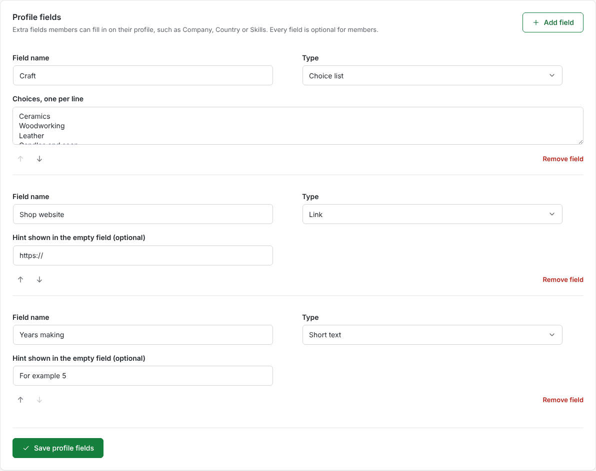
| Type | Members see |
|---|---|
| Short text | A one-line text box, up to 200 characters. |
| Long text | A text area, up to 1000 characters. |
| Link | A web address, shown as a link on the profile. |
| Choice list | A drop-down with the choices you enter, one per line. |
Removing a field hides it everywhere. Answers members already gave are kept, so adding the field back with the same name brings them back.
Without Pro, custom fields are not shown on profiles or the signup form, and the Members admin page shows only Community moderators. The fields and answers are kept.
Posts and the feed
Members post in the spaces they belong to. The Home feed shows posts from every space the member can read, newest first; Recent activity puts posts with new comments first. Each space has its own feed on its Posts tab, where pinned posts stay at the top.
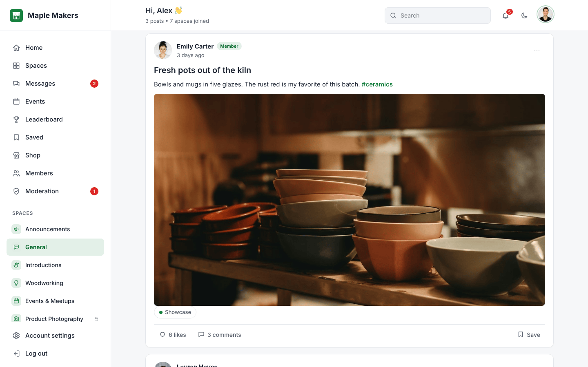
Writing a post
- Click the post box, write, choose a space and press Post. Ctrl or Cmd + Enter also posts.
- Add title gives the post a heading.
- The image button adds up to 10 JPG, PNG, GIF or WebP images. Large photos are resized and their hidden data, such as GPS location, is removed.
- Choose up to three topics.
- Type
@and a name to mention a member.
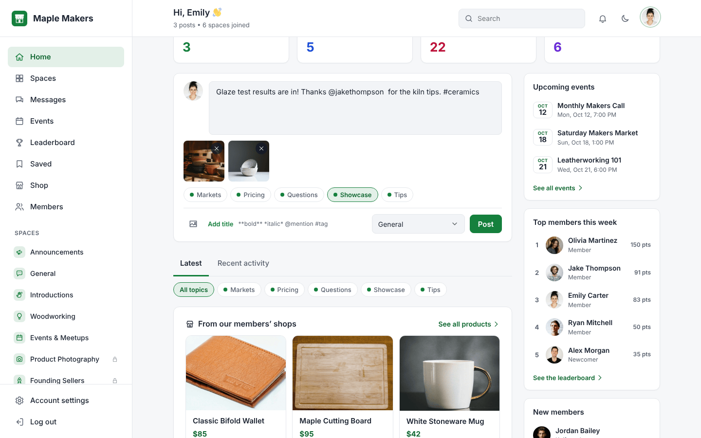
| Type | To get |
|---|---|
**bold** | bold |
*italic* or _italic_ | italic |
`code` | code |
Lines starting with - or 1. | A list |
Lines starting with > | A quote |
@name | A mention linking to the member |
#word | A hashtag |
| A web address | A link |
Link previews and videos
YouTube and Vimeo links show a video player. Nothing is loaded from YouTube or Vimeo until someone presses play. Other links show a preview card with the page title, description and image when Show link previews is on in Settings. To build the card, your site requests the linked page once and stores the result for a day. Turn the setting off if you do not want your site to contact linked websites.
Who can post
Active members of a space can post. In a space's details, Who can start posts can be set to Only space admins and moderators, which suits announcement spaces; members can still like and comment. Authors can edit and delete their own posts. Space admins, moderators and WordPress administrators can edit, delete and pin any post in the space.
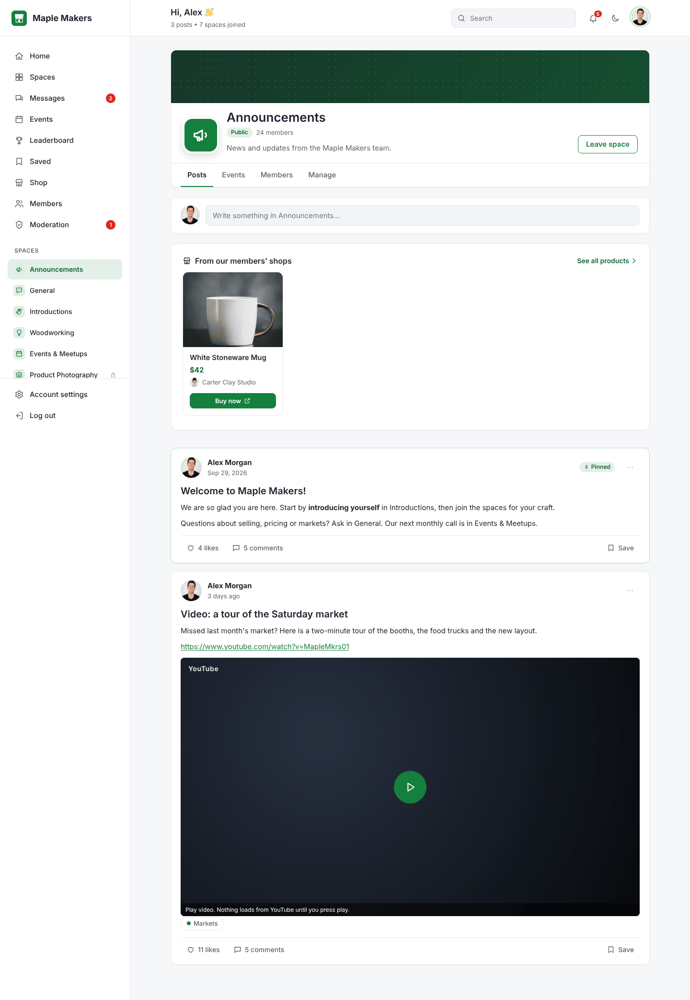
Comments, likes and saved posts
Members of a space comment on its posts and reply to comments. Replies stay one level deep, so conversations remain easy to follow. Members can like posts and comments, and Save any post they can read; saved posts appear on the Saved page, which only they can see.
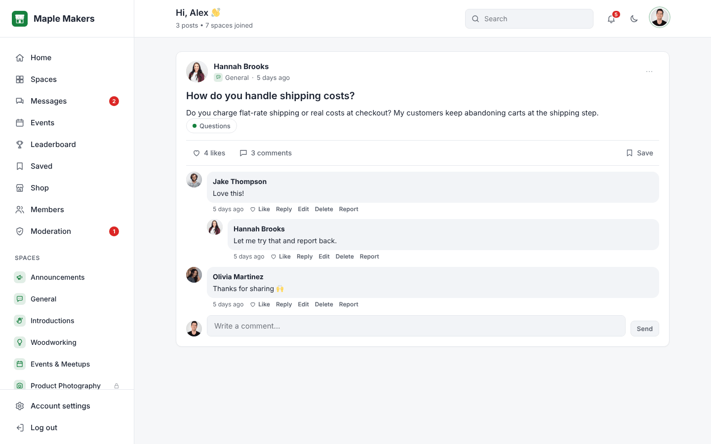
To slow down spam, a member can publish 5 posts and 20 comments per minute. WordPress administrators are not limited. Developers can change the limits with the spacebay_rate_limit filter.
Topics and hashtags
Create topics such as Questions, Ideas or Events in SpaceBay → Topics. Members add up to three topics to a post, and everyone can filter the home feed by topic. Hashtags are created automatically from #words in posts; clicking one shows every post with that hashtag.
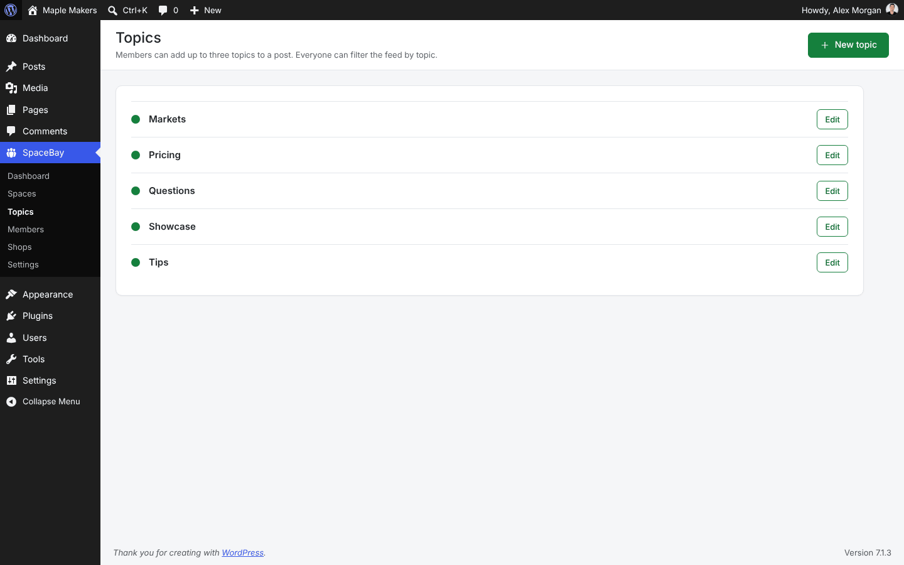
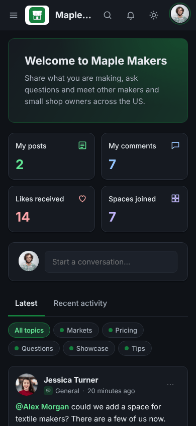
Points, levels and badges
Members earn points for taking part. You choose how many points each action gives in SpaceBay → Settings → Points and badges.
| Action | Points by default |
|---|---|
| A published post | 5 |
| A comment | 2 |
| A like from someone else on their post or comment (likes on your own content do not count) | 1 |
| Opening the community, once a day | 1 |
| Answering “going” to an event | 2 |
Points are taken back when the post or comment is deleted, the like is removed, the member changes their event answer or the event is cancelled. Posts held for review earn points when a moderator approves them. Suspended members do not earn points.
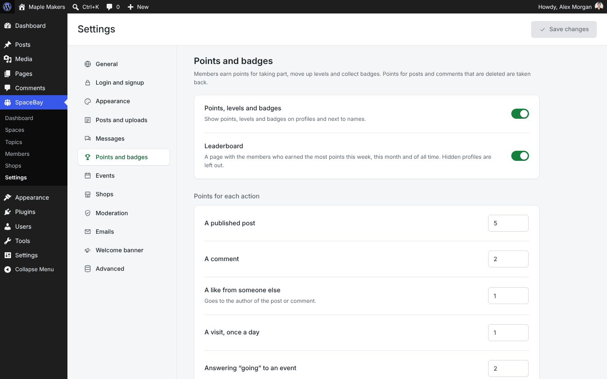
Levels. Each level has a name and the points needed to reach it. A member's level shows on their profile, in the member directory, on the leaderboard and next to their name on posts (from the second level up). Members get a notification when they reach a new level.
Badges. SpaceBay comes with nine badges that members earn on their own: First post, First reply, Storyteller (10 posts), Conversationalist (50 comments), Well liked (25 likes), Crowd favourite (100 likes), Regular (30 daily visits), Event goer (5 events) and Community champion (1,000 points). Switch each one on or off in Settings → Points and badges. Members get a notification for every badge (and an email when they choose it). Badges are kept once earned, also when a rule changes or the member deletes what earned it.
Profiles. A member's profile shows their level, points, place on the leaderboard and badges. On their own profile, members also see how far they are from the next level, the badges they can still earn with their progress, and a Points history.
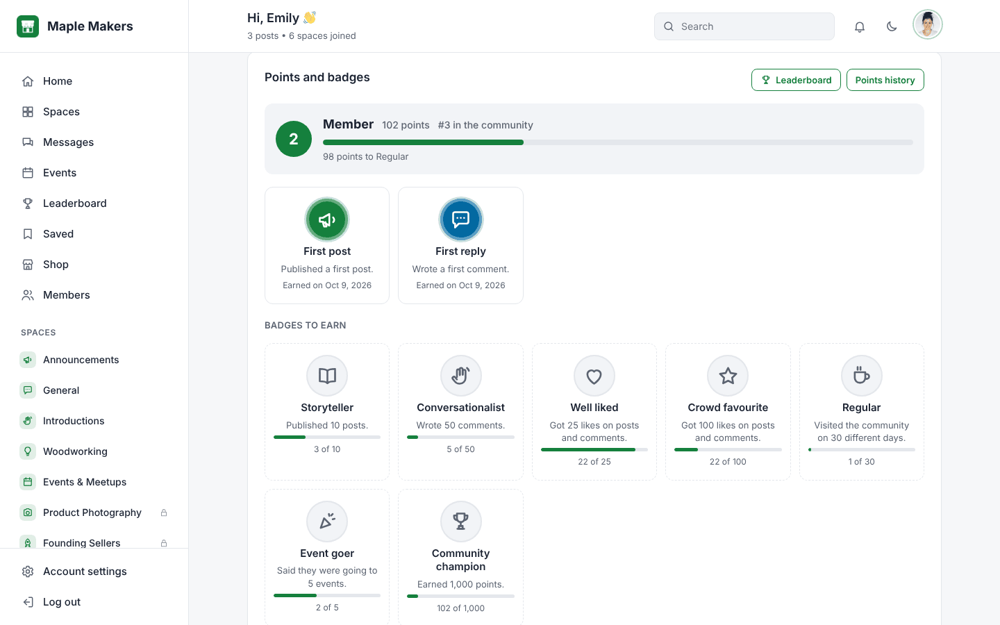
Leaderboard. The Leaderboard page lists the members with the most points this week, this month and of all time, with a top three. Weeks start on the day set in Settings → General → Week Starts On; dates follow your site's time zone. Members with a hidden profile and suspended members are left out.
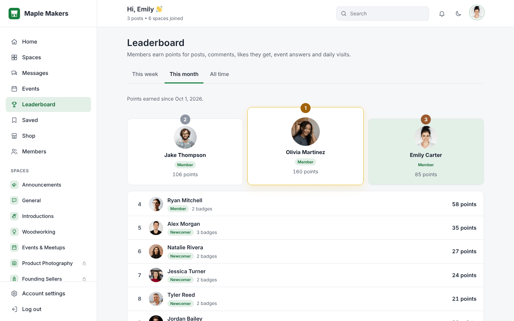
Updating from an earlier version. When you update to 1.2.0, members get points for their earlier posts, comments and likes once, with the original dates, and badges they already reached are given without notifications.
Badge editor Pro
With Pro, Settings → Points and badges has a badge editor. Add up to 40 badges, and change the name, description, colour, icon and rule of any badge. A rule is a number of posts, comments, likes received, points, daily visits or events, or given by hand. Pro adds two badges that the team gives by hand: Founding member and Helper.
Giving badges and points Pro
Admins and community moderators open a member's profile and select Give a badge to give or take away any badge. Community managers (administrators) can also add or take away points with a note, for example for a great answer or to clean up spam. Nobody can give badges or points to themselves.
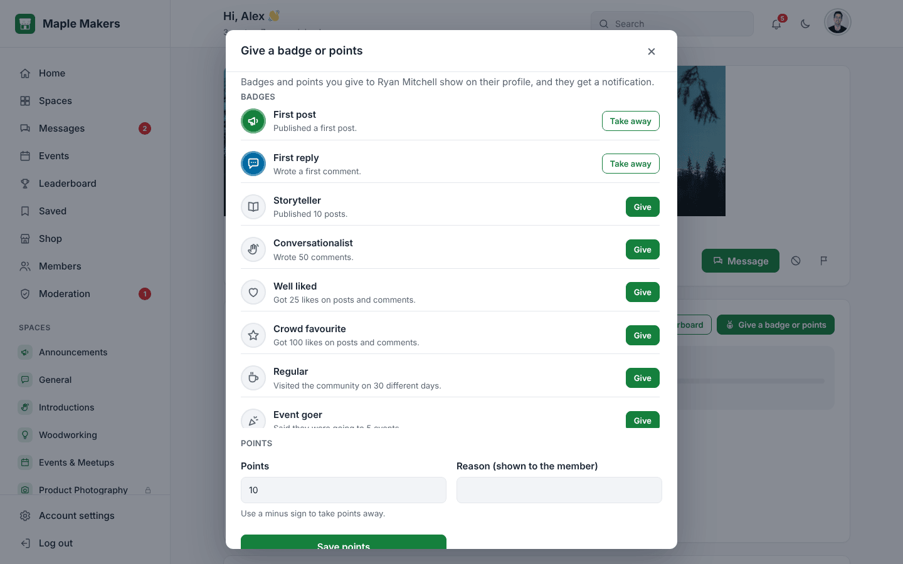
Events
Events belong to a space. Every space gets an Events tab, and the Events page in the sidebar shows events from all spaces the member can read: Upcoming, a month Calendar, the events they are Going to and Past events. Home shows the next events in the side column.
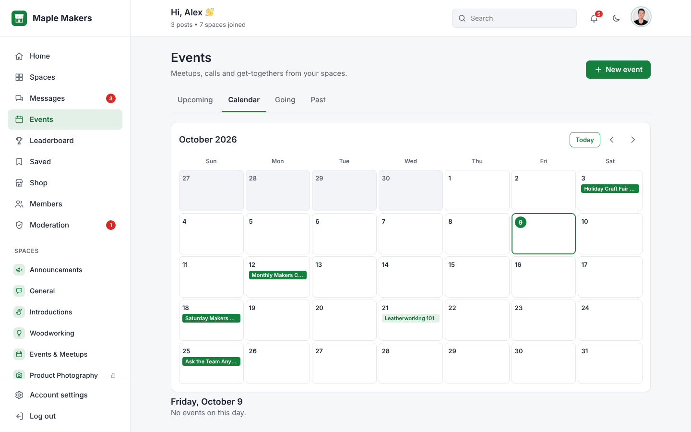
- Adding an event. Space admins and moderators add events from the space's Events tab or the Events page with New event. Set Who can add events to let every member who can post in the space add events too. An event has a title, a description, a start and end time (shown to each member in their own time zone), online with a link or in person with an address. Events can last up to 14 days.
- Answers. Members of the space answer Going, Maybe or Can't go. The page shows who is going; hidden profiles are left out of that list.
- Online link. The meeting link is shown only to members who answered going or maybe, and to the people who manage the event.
- Notifications. Admins can tell all members of the space about a new event. Members who answered going or maybe are told when the time or place changes or the event is cancelled. Members choose the email for these in Account settings → Email notifications.
- Add to calendar. Every event has a Calendar file (.ics) for Apple Calendar, Outlook and others, and a Google Calendar link.
- Change, cancel or delete. The organizer and space moderators can change an event, cancel it (it stays visible as cancelled) or delete it.
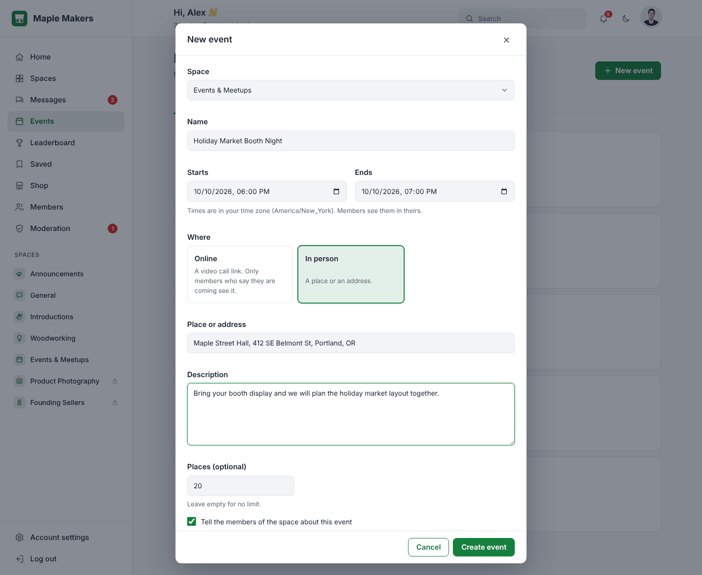
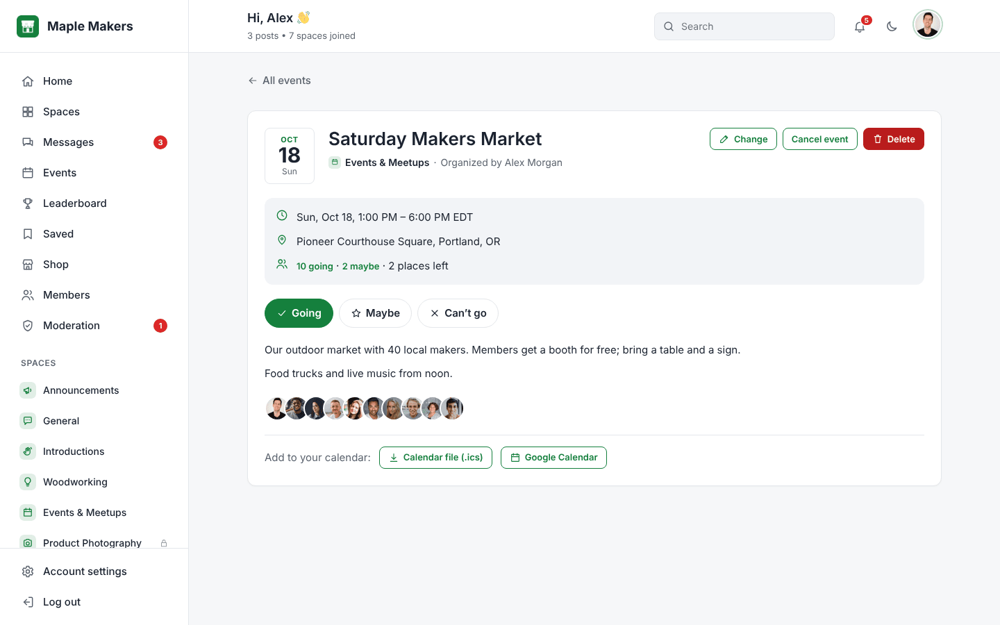
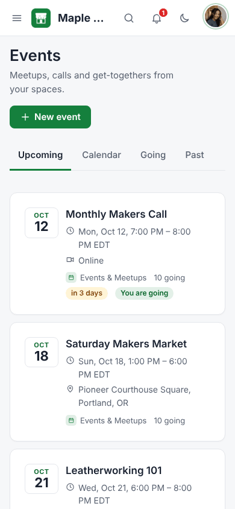
Place limits Pro
With Pro, an event can have a number of places. The event shows how many places are left, and when all places are taken the event is full: members can no longer answer going, but can still answer maybe. In an event with a place limit, the online link is shown only to members who answered going and to the people who manage the event.
Reminders Pro
With Pro, members who answered going or maybe get a reminder before an event starts. Choose 1, 3, 24 or 48 hours, or no reminders, under Settings → Events (24 hours by default). Reminders are sent by WP-Cron once an hour. On sites with little traffic, set up a real cron job for wp-cron.php.
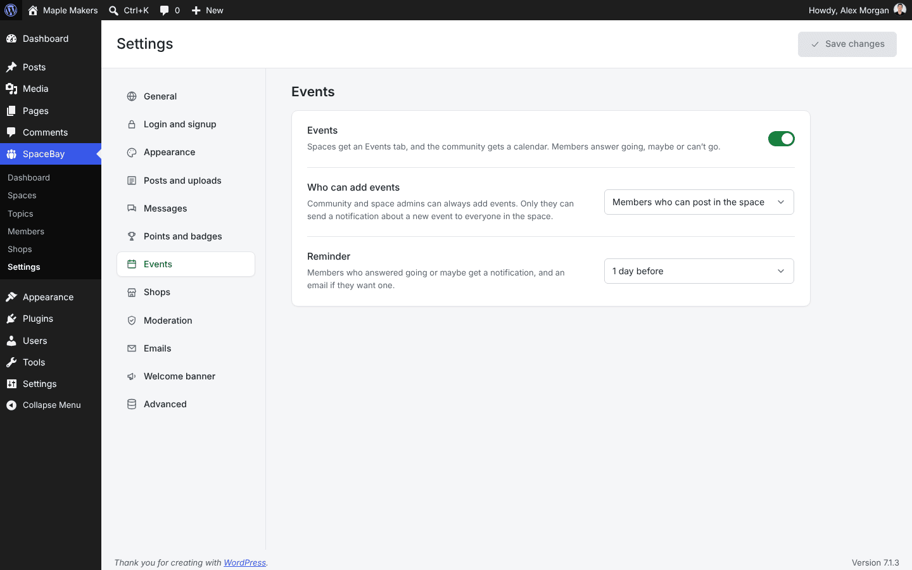
Notifications and emails
The bell in the top bar shows how many notifications a member has not read. It updates every minute while the page is open. Clicking a notification opens the post and marks it read. See all notifications opens the full list, with an Unread filter and Mark all as read.
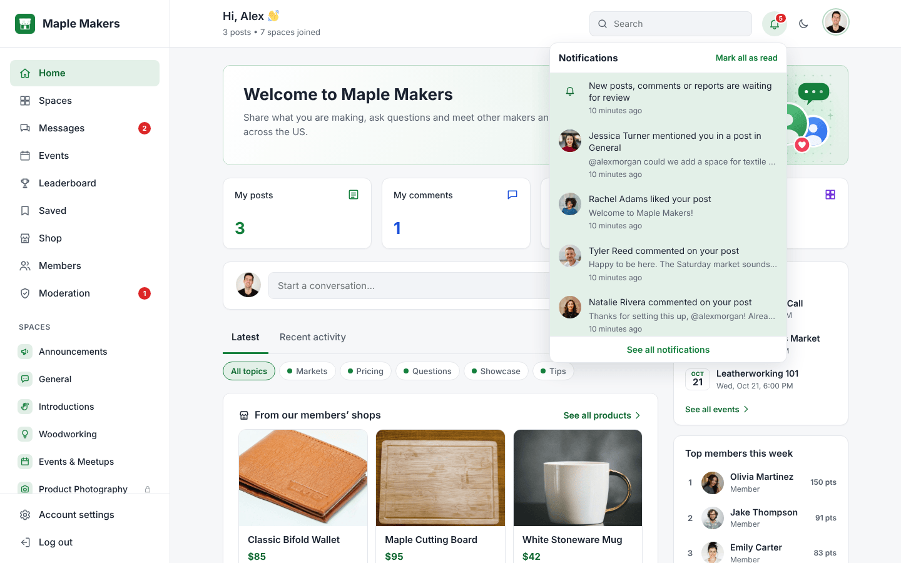
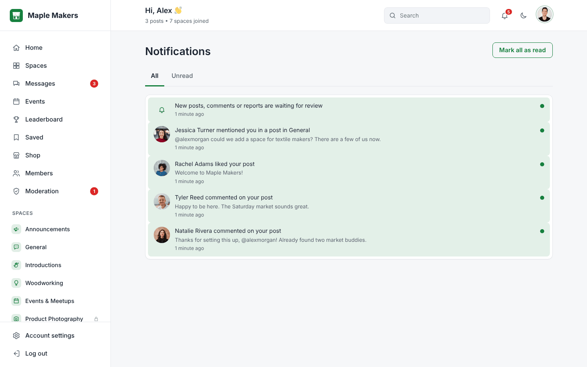
| Members are notified when | Email by default |
|---|---|
| Someone mentions them in a post or comment | Yes |
| Someone comments on their post or replies to their comment | Yes |
| They are invited to a space, or their join request is approved | Yes |
| Someone asks to join a private space they manage | Yes |
| Someone likes their post or comment | No |
| A new event in their space, or an event they answered changes, is cancelled, or starts soon (reminders need Pro) | Yes |
| They earn a badge (or are given one, with Pro), or reach a new level | No |
| Their held post or comment is approved, or a moderator removes it | Yes |
| Their account is approved | Yes |
| Moderators only: content or reports wait for review, or a new member waits for approval | Yes |
Members choose their emails in Account settings → Email notifications. Notifications under the bell are always shown. Members are only notified about posts they can still read, and never about their own actions.
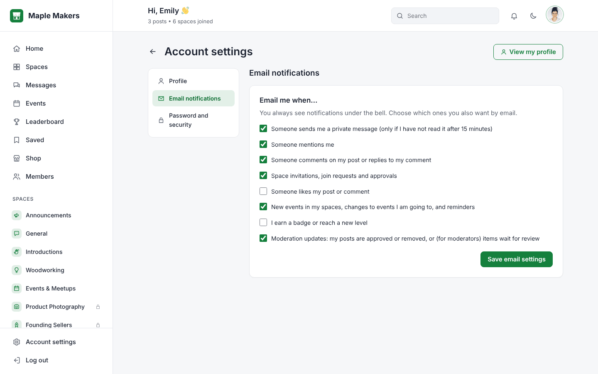
Emails are sent in the background a few seconds later by WP-Cron, using wp_mail(), so they work with any SMTP plugin. If a member reads the notification first, the email is skipped. On sites with little traffic, set up a real cron job for wp-cron.php so emails are not delayed. Read notifications are deleted after 90 days and all notifications after 180 days.
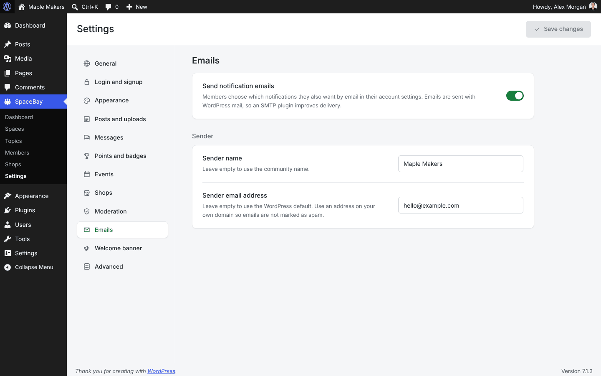
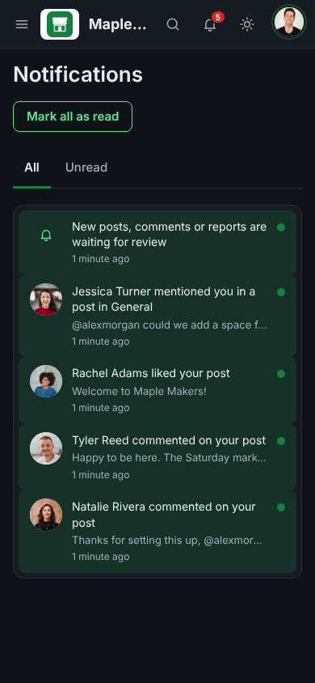
Messages
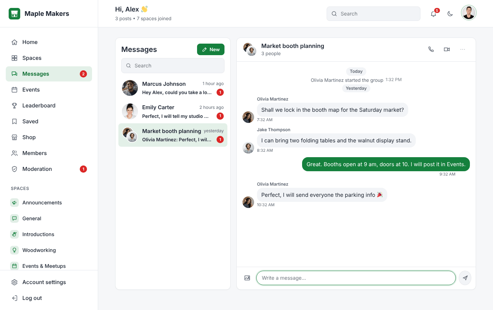
Members send private messages from Messages in the sidebar, where a red number shows unread messages. They start a chat with New, or with the Message button on someone's profile.
- One-to-one and group chats. Pick one person for a private chat, or several to start a group and give it a name. The person who starts a group can add and remove people; anyone can leave. When the owner leaves, the longest-standing member takes over.
- Writing. Enter sends, Shift+Enter adds a new line. Messages support bold, italic, links, lists and up to 10 images. Blocked words are hidden with stars, or the message is refused if blocked words are set to refuse. Members can delete their own messages.
- Live updates. An open chat checks for new messages every 3 seconds; the unread badge refreshes every 5 to 15 seconds while the community is open. "Seen" appears under your last message once the other person has read it.
- Emails. If a message is still unread after 15 minutes, the member gets one email for that conversation (not one per message). Members can turn this off under Account settings → Email notifications, and can mute a conversation.
- Safety. Members can block someone from their profile or the chat menu; neither can then message the other. Report under a message sends it to the moderation queue, where moderators can keep or delete it. Moderators only see messages that were reported. Suspended or waiting members cannot send messages.
Choose who can message whom and whether group chats are allowed under Settings → Messages.
Voice and video calls Pro
Turn calls on under Settings → Messages. A phone and a camera button then appear at the top of each chat. The other people get a ringing call card wherever they are in the community; in group chats everyone is invited and can join. During a call members can mute, turn their camera off, make the call window smaller and keep browsing, or hang up. Finished and missed calls are noted in the chat.
Things to know before turning calls on:
- HTTPS is required. Browsers only allow the microphone and camera on secure sites.
- Sound and video go directly between browsers (WebRTC). They never pass through your server, so calls do not use your hosting bandwidth. Your site only passes small connection messages while a call starts.
- Group calls work best for up to 4 people. Every person sends their video to every other person.
- Some networks need a TURN server. Most calls connect with the default STUN server alone, but strict office, school and some mobile networks block direct connections. Add a TURN server (from a provider such as Cloudflare, Twilio or Metered, or your own coturn server) under Settings so these calls connect too. Developers can hand out short-lived TURN credentials with the
spacebay_call_ice_serversfilter. - Privacy. In a direct connection the people in a call can see each other's network (IP) address. With a TURN server, calls can be relayed instead.
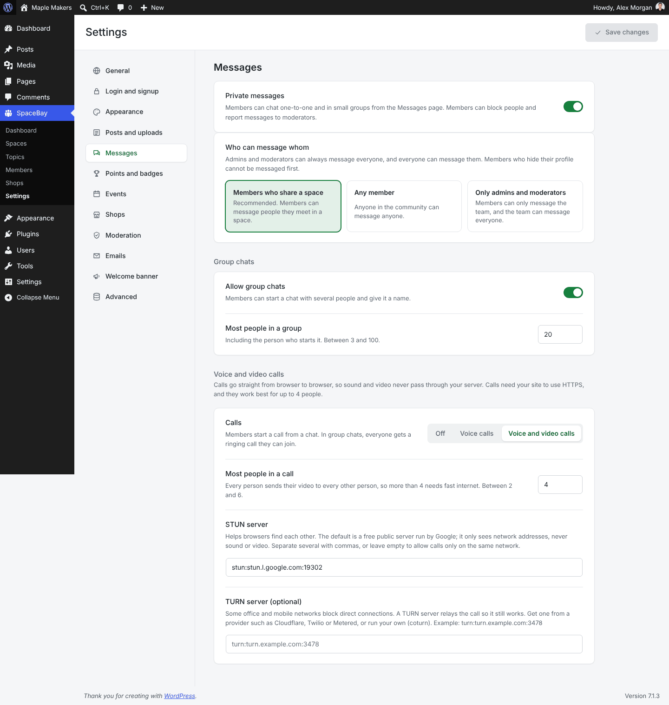
Member shops Pro
Members can open a shop on their profile and show what they make or sell. Every product has a name, an optional price, up to four photos, a description and a link to the page where people buy it: their own online store, a marketplace page or a social page. The button on the product opens that page in a new tab. SpaceBay never takes payments and has no cart or checkout.
Turning shops on
Go to SpaceBay → Settings → Shops and turn on Member shops. Then choose what happens with new products:
- Approve each product (default): new products, and changes to the name, price, text, photos or link of a product, wait until an admin approves them.
- Publish automatically: products show right away.
In both modes, a product with a blocked word waits for review, and a product an admin rejected only comes back after an admin approves it. Shop names with blocked words are refused.
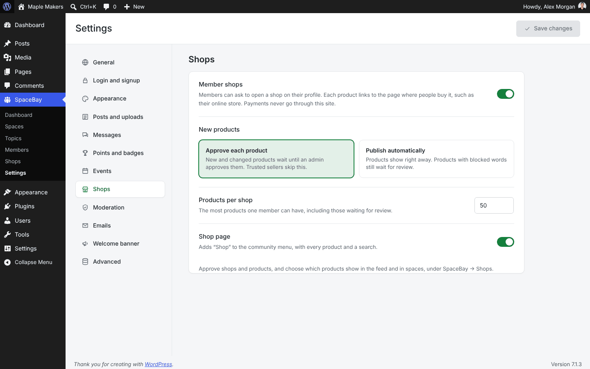
Opening a shop
- The member opens their profile, clicks the Shop tab and then Ask to open a shop. They can give a shop name and say what they will sell.
- Admins get a notification. Under SpaceBay → Shops → Shop requests (or on the member's Shop tab) they click Approve or Refuse with a reason the member sees.
- The member gets a notification and can add products with Add product.
Admins can also open a shop for a member who never asked (Sellers or Shop requests tab, Open a shop for a member) and get their own shop right away. Other members see a Shop tab on a profile once that shop has a published product.
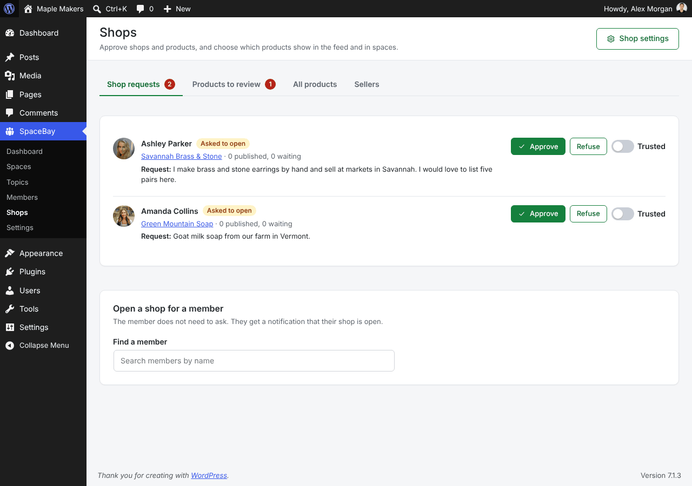
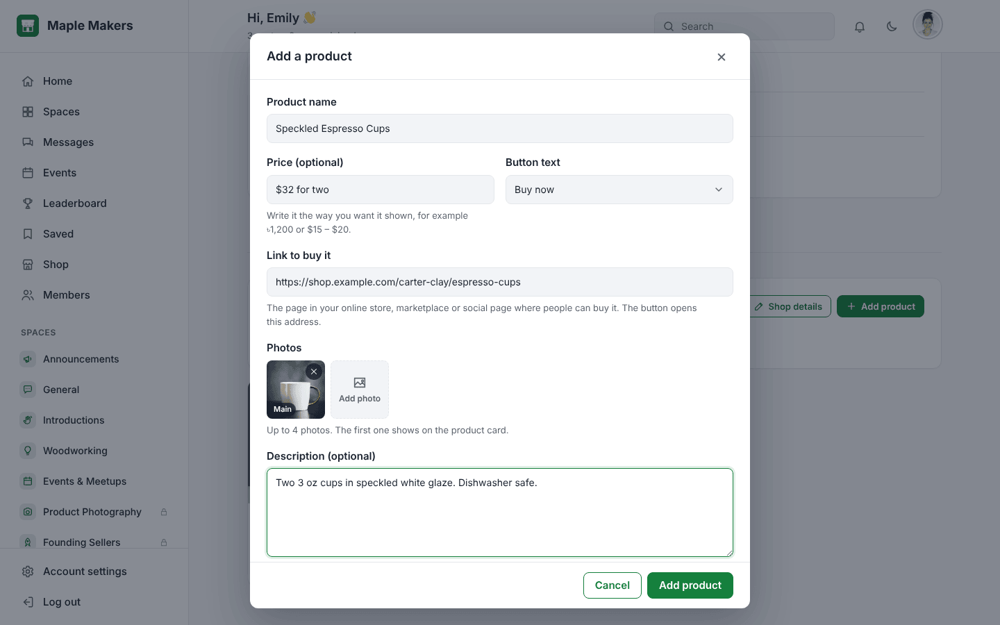
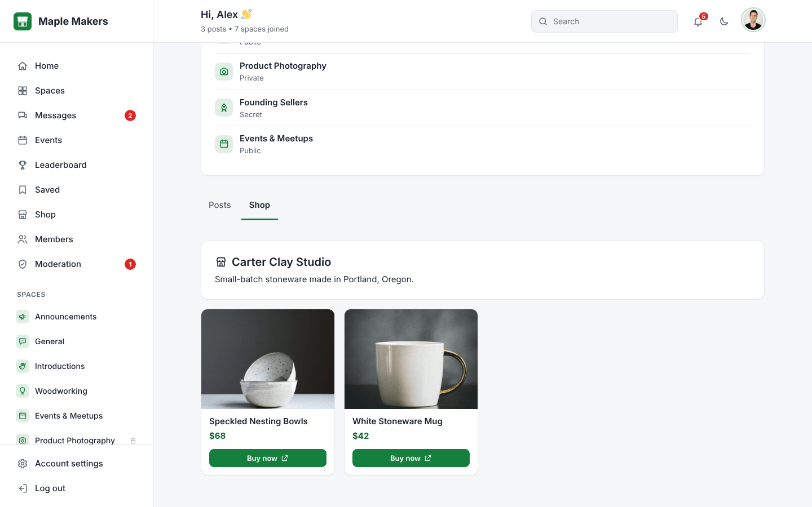
Trusted sellers
On the Sellers tab, switch on Trusted for a seller whose products should show without review, even when every product needs approval.
Reviewing products
SpaceBay → Shops → Products to review lists the products waiting for you, with their link so you can check it first. Click Approve, or Reject with a reason the seller sees. If the seller changes a product while you look at it, SpaceBay asks you to check it again before approving. Admins can also review from the product itself in the community.
Showing products in the feed and in spaces
Products always show in the seller's shop and on the Shop page. To show a product to more people, open All products, click Where it shows and tick The main feed (Home) and any spaces. Chosen products show in a row called “From our members' shops” at the top of Home or of the space. Members only see it in a space they can read. A product that goes back to review leaves these places until it is approved again.
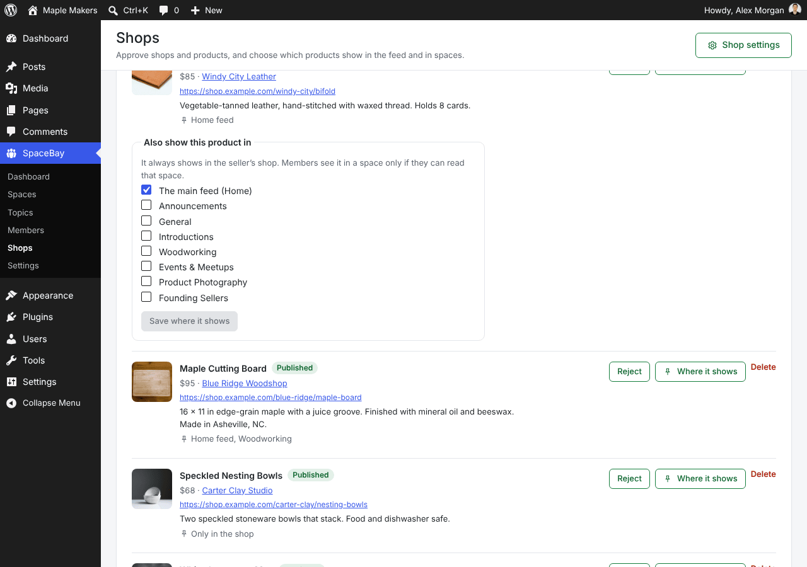
Closing a shop
On the Sellers tab, Close shop hides every product of that shop. The seller sees your reason and can still delete their products. Open shop again brings everything back. Products of suspended members and of members with a hidden profile are also hidden.
The Shop page
With Shop page on, the community menu has a Shop link with every published product and a search. Each product has its own link (for example /community/shop?product=12) to share.
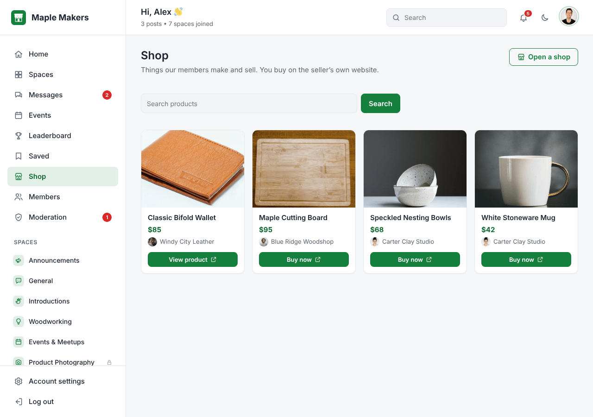
Privacy. Shops and products are part of the WordPress personal data export and erasure. Deleting a member deletes their shop, products and photos.
Search
The search box in the top bar finds posts, spaces and members. Results only include posts and spaces the person may see. Members are searched by name, only for logged-in people while the member directory is on, and hidden profiles are left out. On phones, use the search icon in the top bar.
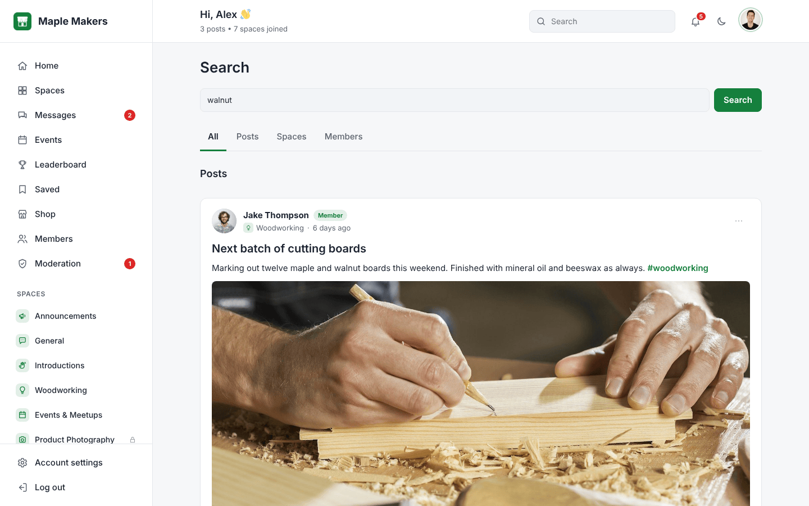
Moderation
Community moderators and administrators see Moderation in the community sidebar, with a red number when something needs a decision. The page has three tabs: To review, New members and Suspended.
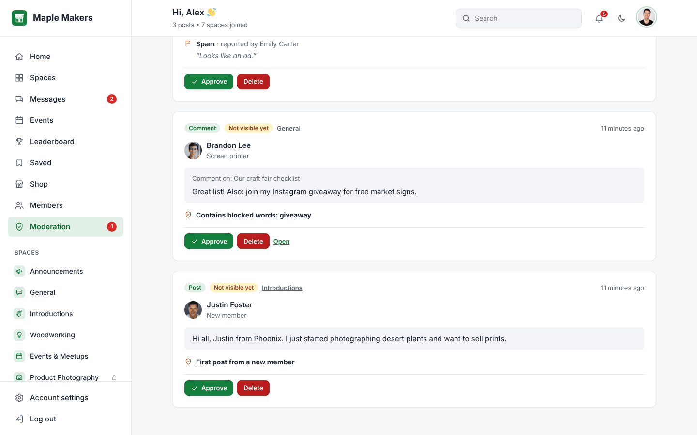
Each item shows the post or comment, its author, its space and why it is there. Choose Approve (or Keep for visible content) to publish it and close its reports, or Delete to remove it. Delete asks you to click a second time. Authors are told when their post or comment is approved or removed, but never who reported it.
Content is held for review when:
- it contains a blocked word and the blocked-word action is Hold for review;
- it is a member's first post and New posts is set to review the first post (after one approval the member posts freely);
- New posts is set to review every new post;
- enough members reported it (see Reports).
The author sees a message that a moderator will review it. Held content is not shown in feeds, search or notifications, and mentions are sent only after approval. Space admins, space moderators and community moderators are never held, and edits that add a blocked word are refused with a message. Blocked words match whole words in any letter case, so cat does not match category.
Reports
Logged-in members can report a post or comment from its menu, and a member from the flag button on their profile. They choose a reason (spam, harassment or hate, inappropriate content, or something else) and can add a note for moderators. A member can report the same thing once; members cannot report themselves.
When a post or comment reaches the number of reports set in Hide content after this many reports, it is hidden until a moderator decides. Keep shows it again in its original place; Delete removes it. For a reported member, Dismiss closes the reports and Suspend member suspends the account. Content written by moderators is never hidden automatically.
Member approval and suspension
With Approve new members before they can take part on, people who sign up can log in but see a message that their account is waiting for approval. They can read public content like a visitor, but cannot post, comment, react, join spaces or see the member directory. Moderators approve or decline them on Moderation → New members; approved members get a notification and an email. Turning the setting on does not affect existing members.
Suspended members (declined sign-ups and members suspended after a report) see a message that their account is suspended and use the community like a visitor. Restore them on Moderation → Suspended. Administrators and community moderators cannot be suspended. Administrators also see members' email addresses on these lists; moderators do not.
When a community is set to Logged-in members only, waiting and suspended members see only the message.
Community moderators
Add moderators in SpaceBay → Members → Community moderators: search for a member and select Make moderator. Moderators review reports, held content and new members, and can edit, pin or delete content in every space, but cannot change settings or open the SpaceBay admin. Administrators are always moderators. Technically, moderators get the spacebay_moderate capability, so you can also give it to a whole role with a role editor plugin.
Each space can also have its own admins and moderators, chosen on the space's Members tab. They can edit and delete posts and comments in that space, and their own posts are never held for review.
Privacy and personal data
SpaceBay works with the WordPress privacy tools in Tools → Export Personal Data and Tools → Erase Personal Data.
- Export includes the member's profile and custom fields, email choices, space memberships, posts, comments, private messages they sent, likes and saved posts, uploaded images, reports they sent, notifications they received, points, badges, event answers and events they organized.
- Erase deletes the member's posts, comments, private messages (a "Message deleted" line stays in the chat), likes, images, blocked members list, profile, memberships, notifications, reports, points, badges, event answers and events they organized. Replies that other members wrote to their comments are kept as separate comments.
- Deleting a WordPress user also deletes their community data, including their two-factor setup when Pro is active.
SpaceBay adds suggested text to Settings → Privacy → Policy Guide. Review it and add what fits to your privacy policy. Note that images are stored in wp-content/uploads/spacebay/ with random names; anyone who knows an image address can open it, also for private spaces.
Security and limits
Every REST request checks the member's permission and the WordPress nonce. Posts, comments and profile text are cleaned before they are saved and shown. Uploaded JPG, PNG and WebP images are saved again by WordPress, which removes hidden data and location details; GIF images are checked for hidden code. Link previews only fetch public web addresses on ports 80 and 443.
| Action | Limit per member |
|---|---|
| New posts | 5 a minute |
| Comments | 20 a minute |
| Edits of posts and comments | 20 a minute |
| Image uploads | 20 a minute, up to 30 images not yet posted |
| Likes and saves | 60 a minute |
| Joining or leaving spaces | 20 a minute |
| Invitations | 30 a minute |
| Profile saves | 20 a minute |
| Reports | 10 a minute |
| Members mentioned in one post or comment | 20 |
Logging in and signing up have their own limits, which apply to everyone:
| Action | Limit |
|---|---|
| Wrong passwords for one account | 5 in 15 minutes from one network address, 20 in 15 minutes in total |
| Wrong login codes for one login Pro | 5, then the member logs in again |
| Wrong login codes for one account Pro | 10 in 15 minutes and 30 a day. The member gets an email when the daily limit is reached. |
| Login codes by email for one account Pro | 10 an hour |
| New accounts from one network address | 5 an hour |
| Password reset emails | 3 an hour for one account, 5 requests in 15 minutes from one network address |
Change these with the spacebay_auth_attempts filter. They cover the community login page; to also limit attempts on wp-login.php, use a login protection plugin or your host's firewall. If your site is behind a proxy or CDN that hides visitor addresses, return the real address with the spacebay_client_ip filter, otherwise all visitors share one limit. With Pro, authenticator keys are stored encrypted, and backup codes and emailed codes are stored as hashes.
For the other actions, administrators are not limited. Change limits with the spacebay_rate_limit filter. Images can be up to 8000 pixels on the longest side; the server's memory limit can lower this.
Tested with
| Area | Tested |
|---|---|
| WordPress | 6.2 and 7.1, single site and multisite (network activation, sub-sites) |
| PHP | 7.4, 8.3 and 8.4 |
| Themes (inside theme layout) | Twenty Twenty-Five (block theme), Twenty Twenty-One, Astra, GeneratePress, Kadence |
| Plugins active together | WooCommerce, Yoast SEO, Elementor, Contact Form 7, Wordfence |
| Languages | English and Arabic (right to left) |
| Accessibility | Automated WCAG 2.1 AA checks (axe) on every portal and admin screen, light and dark mode |
| Size | 48,000 posts: the feed loads in about 60 ms on a basic server |
Sample content (WP-CLI)
To try SpaceBay or build a demo site, add sample spaces, members, topics, posts, comments and likes with WP-CLI:
wp spacebay demo
wp spacebay demo --removeIt adds 7 spaces (reusing spaces you already have with the same names), 24 members, 23 posts with comments, replies and likes, a member waiting for approval, a join request, a reported post, two private chats with the first administrator, and five events (four coming up, one past) with answers. It refuses to run twice. Sample members get addresses ending in example.invalid and cannot receive email, and no notifications are sent. --remove deletes exactly what the command added.
Updates
SpaceBay (free)
Updates come from WordPress.org. New versions appear on Dashboard → Updates and on the Plugins screen like any other plugin, and WordPress can install them automatically.
SpaceBay Pro Pro
Pro does not update itself yet. To update it:
- Download the new spacebay-pro.zip from your wpanchorbay.com account.
- Go to Plugins → Add New Plugin → Upload Plugin, choose the zip and click Install Now.
- Confirm Replace current with uploaded.
Your community data is kept during updates. SpaceBay Pro 1.1.0 needs SpaceBay 1.1.0 or newer, so update the free plugin too.
Template overrides
Copy a file from wp-content/plugins/spacebay/templates/ to wp-content/themes/your-theme/spacebay/ and edit the copy.
| File | Used for |
|---|---|
portal-standalone.php | Full page layout. |
portal-theme.php | Layout inside the theme header and footer. |
portal-mount.php | The element the portal app loads into. |
emails/notification.php | Notification emails. Copy it to your-theme/spacebay/emails/notification.php. |
Hooks for developers
Hooks marked Pro come from SpaceBay Pro and only fire while it is active.
| Hook | Type | Description |
|---|---|---|
spacebay_loaded | Action | After every component is loaded. |
spacebay_installed | Action | After install or database upgrade on a site. |
spacebay_settings_updated | Action | After settings are saved. Receives new and old settings. |
spacebay_settings_schema | Filter | Add your own settings. See Extending SpaceBay. |
spacebay_rest_controllers | Filter | Add REST controllers that extend SpaceBay\Rest\Controller. |
spacebay_portal_template | Filter | Change the template file used for the portal. |
spacebay_member_signed_up | Action | After someone created an account on the signup page. Receives the user ID and the checked form values (without the password). |
spacebay_two_factor_enabled Pro | Action | After a member turned on two-factor authentication. Receives the user ID and the method (app or email). |
spacebay_two_factor_disabled Pro | Action | After two-factor authentication was removed from an account by the member or an administrator. Receives the user ID. |
spacebay_account_email | Filter | Change an account email (login code, password reset, welcome) before it is sent. Receives the email parts, the user ID and the parts it was built from. |
spacebay_auth_attempts | Filter | Change how many login, signup or code attempts are allowed. Receives the limit and the action name. |
spacebay_client_ip | Filter | Return the visitor's real network address when your site is behind a proxy or CDN. |
spacebay_space_created | Action | After a space is created. Receives the space ID and creator ID. |
spacebay_space_updated | Action | After a space is edited. Receives the space ID and changed fields. |
spacebay_space_deleted | Action | After a space or group is deleted. Receives the deleted row. |
spacebay_membership_changed | Action | After someone joins, asks to join, is approved, invited, blocked or gets a new role. |
spacebay_membership_removed | Action | After someone leaves or is removed from a space. |
spacebay_space_member_invited | Action | After a space admin invites or adds someone. |
spacebay_member_directory_args | Filter | Change the WP_User_Query arguments of the member directory. |
spacebay_can_message | Filter | Whether one member may message another. Receives the decision, sender ID and recipient ID. |
spacebay_message_sent | Action | After a private message is sent. Receives the message, conversation and recipient IDs. |
spacebay_message_email_delay | Filter | Seconds a message stays unread before the reminder email (900 by default). |
spacebay_message_email_parts | Filter | Change the unread-messages email (to, subject, message, headers). |
spacebay_call_started Pro | Action | After a member starts a call. Receives the call and the conversation. |
spacebay_call_ice_servers Pro | Filter | Change the STUN/TURN servers sent to browsers, for example to create short-lived TURN credentials per member. |
spacebay_member_stats | Filter | Change the activity totals (posts, comments, likes, spaces) shown on a member's home page. Receives the totals and the member ID. |
spacebay_post_created | Action | After a post is published. Receives the post and the IDs of mentioned members. |
spacebay_post_updated | Action | After a post is edited. |
spacebay_post_deleted | Action | After a post is deleted. |
spacebay_comment_created | Action | After a comment is added. Receives the comment, the post and mentioned member IDs. |
spacebay_comment_deleted | Action | After a comment and its replies are deleted. Receives the comment and, since 1.2.0, the IDs of every removed comment. |
spacebay_reaction_added | Action | After a like or save. |
spacebay_reaction_removed | Action | After a like or save is removed. Since 1.2.0. |
spacebay_points_added | Action | After points are added or taken away. Receives the user ID, the points, the reason (post, comment, like, daily, event, manual), the total before and the total after. Since 1.2.0. |
spacebay_badge_awarded | Action | After a member gets a badge. Receives the user ID, badge key, the ID of the person who gave it (0 when earned), the row ID and whether a notification is sent. Since 1.2.0. |
spacebay_event_created | Action | After an event is added. Receives the event and the space. Since 1.2.0. |
spacebay_event_updated | Action | After an event is changed. Receives the new and the old event. Since 1.2.0. |
spacebay_event_deleted | Action | After an event is deleted. Receives the deleted event. Since 1.2.0. |
spacebay_event_rsvp | Action | After a member answers an event. Receives the event, the user ID, the new answer (empty when removed) and the previous answer. Since 1.2.0. |
spacebay_profile_updated | Action | After a member saves their profile. Receives the user ID and the saved fields. |
spacebay_create_notification | Filter | Return false to skip a notification. Receives the recipient ID, action key and actor ID. |
spacebay_notification_created | Action | After a notification is stored. Receives the notification ID, recipient ID and action key. |
spacebay_notification_text | Filter | Text for custom notification actions. Receives the text, action, actor name and stored data. |
spacebay_notification_email | Filter | Change the recipient, subject, message or headers of a notification email before it is sent. |
spacebay_email_preference_defaults | Filter | Change which emails new members get by default. |
spacebay_blocked_words | Filter | Change the list of blocked words. |
spacebay_hold_content | Filter | Return a reason key to hold a post or comment for review, or an empty string to publish it. |
spacebay_content_held | Action | After a post or comment is held for review. |
spacebay_content_reported | Action | After a member reports a post, comment or member. |
spacebay_content_approved | Action | After a moderator approves held content. spacebay_post_created and spacebay_comment_created also fire when new content is approved. |
spacebay_content_removed | Action | Before a moderator deletes reported or held content. |
spacebay_member_pending | Action | When a new member waits for approval. |
spacebay_member_status_changed | Action | After a member is approved, suspended or restored. |
spacebay_link_preview_allowed | Filter | Return false to stop link previews for a URL. |
spacebay_rate_limit | Filter | Change how many posts, comments or uploads a member may send per minute. |
add_action( 'spacebay_settings_updated', function ( $new, $old ) {
if ( $new['portal_slug'] !== $old['portal_slug'] ) {
// The community moved to a new address.
}
}, 10, 2 );Extending SpaceBay (add-ons)
Since 1.3.0, add-ons such as SpaceBay Pro can add features to the portal, the admin screens, the login, events, badges, messages and settings. These are the PHP hooks for that:
| Hook | Type | Purpose |
|---|---|---|
spacebay_settings_schema | Filter | Add settings. An entry can have a sanitize callable that cleans the value. Type array takes a list of objects and needs sanitize. |
spacebay_settings_response | Filter | Add what your settings need to the data sent to the settings screen. |
spacebay_table_names | Filter | Register the short names of your own tables. Add-ons create and remove their tables themselves. |
spacebay_app_config | Filter | Change the configuration passed to the portal and admin apps. Receives the config and the current user. |
spacebay_pulse | Filter | Add data to the pulse that the apps poll (/me/pulse). Receives the data and the member ID. |
spacebay_conversation_messages | Filter | Change a page of a conversation's messages. |
spacebay_conversation_items | Filter | Change the list of conversations sent to a member. |
spacebay_message_system_text | Filter | Text of a system line in a chat for your own events, such as Pro's call lines. |
spacebay_social_profile | Filter | The profile read from Google or Facebook (id, email, verified, name) and the provider. Set verified to false to stop accounts from being connected by email address. |
spacebay_login_challenge | Filter | Add a second login step after a correct password or a Google or Facebook login. Return an array that describes the step, a WP_Error, or null to log the member in. |
spacebay_security_summary | Filter | Add data to the member's Password and security page. |
spacebay_signup_catalogue | Filter | Add fields that can be on the signup form. Keys start with field_. |
spacebay_signup_rows | Filter | Choose which signup fields are shown, which are required and their order. |
spacebay_profile_field_values | Filter | Clean answers to extra profile fields before they are saved. |
spacebay_profile_display_fields | Filter | Extra profile fields shown on a profile, as label and value. |
spacebay_default_badges | Filter | Change the badges new communities start with. |
spacebay_achievements | Filter | Change the points, level and badges shown on a profile. Receives the summary, the member ID and the viewer ID. |
spacebay_event_fields | Filter | Add fields an event form may send, as REST argument definitions. |
spacebay_event_clean | Filter | Add your own clean values to an event before it is saved. |
spacebay_event_answer_check | Filter | Return a WP_Error to refuse an event answer, for example when the event is full. |
spacebay_event_can_see_link | Filter | Whether the viewer may see an event's online link. |
spacebay_event_data | Filter | Change an event as sent to the apps. |
spacebay_enqueue_app | Action | After the portal or admin app is enqueued. Receives $app (portal or admin) and $handle. Enqueue your script here with $handle as a dependency. |
spacebay_conversation_deleting | Action | Before a conversation is deleted, so you can remove your own data. Receives the conversation ID. |
spacebay_admin_screens | Filter | Add a screen to the SpaceBay admin menu: route (for example /shops) => label. Add the route with addRoute() in the admin app. Since 1.1.0. |
spacebay_member_profile | Filter | Add data to a member's profile page. Receives the data, the member ID and the viewer ID. Since 1.1.0. |
spacebay_notification_group | Filter | Choose the email preference group (for example moderation) of your own notification actions, so they can be emailed. Since 1.1.0. |
JavaScript. The portal and admin apps expose window.SpaceBay. Your script loads after the app script and registers before the app starts.
| Name | Purpose |
|---|---|
extend( callback ) | Register your add-on. The callback receives { app, router, config, api, area } (and pinia in the portal) before the app mounts. area is portal or admin. |
addSlot( name, component, { order, replace } ) | Show a Vue component in a named slot. Lower order shows first; replace: true shows it instead of the slot's own content. |
addRoute( route ) | Add a Vue Router route. |
addHook( name, fn ), runHook( name, ...args ) | Run code when the app calls a hook. |
addFilter( name, fn ), applyFilters( name, value, ...args ) | Change a value the app passes through a filter. |
Vue, VueRouter, Pinia | The libraries the app uses (Pinia in the portal only). Build your add-on with vue, vue-router and pinia as externals that point here, so both scripts share one copy. |
| App | Slots | Hooks and filters |
|---|---|---|
| Portal | app.layers, messages.header.actions, login.step, account.security, account.profile.fields, member.achievements.actions, event.form.fields, nav.items (each component renders an <li>), home.feed.top, space.posts.top (receives space) | Hook pulse (receives the pulse data); filters login.resume and member.tabs (add { key, label, component } profile tabs; receives { member, config }; the component gets member) |
| Admin | settings.login, settings.signup, settings.messages, settings.events, settings.badges, admin.members, and settings.<id> for sections you add | Filter settings.sections (add { id, icon, title } sections to Settings; their content goes in slot settings.<id>, which receives the settings form). Routes added with addRoute() can set meta.title for the browser tab. |
A small add-on that puts a button at the top of every chat:
// my-addon.php
add_action( 'spacebay_enqueue_app', function ( $app, $handle ) {
if ( 'portal' === $app ) {
wp_enqueue_script( 'my-addon', plugins_url( 'my-addon.js', __FILE__ ), array( $handle ), '1.0.0', true );
}
}, 10, 2 );
// my-addon.js
window.SpaceBay.extend( () => {
const { h } = window.SpaceBay.Vue;
const MyButton = { render: () => h( 'button', { type: 'button' }, 'Hello' ) };
window.SpaceBay.addSlot( 'messages.header.actions', MyButton, { order: 20 } );
} );REST API
All endpoints live under /wp-json/spacebay/v1/ and use standard WordPress cookie authentication with the X-WP-Nonce header.
| Endpoint | Method | Who |
|---|---|---|
/me | GET | Anyone. Returns the current member or logged_in: false. |
/settings | GET, POST, PUT | Administrators. |
/auth/login | POST | Visitors, while the community login pages are on. Returns logged_in with a redirect address, or a second step when an add-on asks for one (the code step of Pro). |
/auth/signup | POST | Visitors, while signing up is on. |
/auth/forgot, /auth/reset | POST | Visitors. Forgot always gives the same answer, whether the account exists or not. |
/me/security, /me/password | GET, PUT | Logged-in members. Changing the password needs the current one. |
/me/pulse | GET | Logged-in members. Unread messages and notifications, plus what add-ons add (with Pro, calls ringing for them). |
/conversations, /conversations/{id} | GET, POST, PATCH | Members in the conversation. POST starts a one-to-one chat or group within the messaging rules; PATCH renames a group or mutes it. |
/conversations/{id}/messages, /conversations/{id}/read | GET, POST | Members in the conversation. GET takes before, after and limit. |
/conversations/{id}/members, /conversations/{id}/members/{user_id} | POST, DELETE | Group owner adds and removes people; anyone can remove themselves. |
/messages/{id} | DELETE | The author, or a moderator. |
/messages/recipients, /me/blocks | GET, POST | Logged-in members. |
/admin/stats | GET | Administrators. |
/spaces | GET, POST | GET: anyone who can open the community (only spaces they may see). POST: administrators. |
/spaces/{id}, /spaces/slug/{slug} | GET, PATCH, DELETE | GET: people who may see the space. PATCH: space admins. DELETE: administrators. |
/spaces/{id}/join, /spaces/{id}/leave | POST | Logged-in members. |
/spaces/{id}/members | GET, POST | GET active members: logged-in members who may read the space, while the member directory is on (space admins always). Hidden profiles are left out. Other lists and POST (invite): space admins. |
/spaces/{id}/members/{user_id} | PATCH, DELETE | Space admins. |
/space-groups, /space-groups/{id} | POST, PATCH, DELETE | Administrators. |
/members, /members/{id} | GET | Logged-in members, when the directory is on. |
/feed | GET | Anyone who can open the community. Only posts in spaces they may read. Filters: space_id, user_id, topic, hashtag, bookmarked, search, orderby. |
/posts | POST | Members who may post in the space. |
/posts/{id} | GET, PATCH, DELETE | GET: readers of the space. PATCH and DELETE: the author and space moderators. |
/posts/{id}/like, /bookmark, /pin | POST | Like: space members. Save: logged-in readers. Pin: space moderators. |
/posts/{id}/comments | GET, POST | GET: readers of the space. POST: space members. |
/comments/{id}, /comments/{id}/like | PATCH, DELETE, POST | Edit and delete: the author and space moderators. Like: space members. |
/media | POST | Logged-in members. One image per request in the file field. |
/topics, /topics/{id} | GET, POST, PATCH, DELETE | GET: anyone who can open the community. Changes: administrators. |
/me/profile | GET, PATCH | Logged-in members, for their own profile. |
/me/avatar, /me/cover | POST, DELETE | Logged-in members. POST one image in the file field. |
/me/email-preferences | GET, PUT | Logged-in members. |
/notifications, /notifications/count | GET | Logged-in members, for their own notifications. Filter: unread. |
/notifications/read | POST | Logged-in members. Send ids or all: true. |
/reports | POST | Logged-in members. object_type (post, comment, member), object_id, reason, optional note. |
/moderation/counts, /moderation/queue | GET | Moderators. |
/moderation/queue/{type}/{id} | POST | Moderators. action: approve or remove. |
/moderation/members, /moderation/members/{id} | GET, POST | Moderators. List pending or suspended members; POST status: active or blocked. |
/moderators, /moderators/{id} | GET, POST, DELETE | Administrators. |
/admin/setup | GET, POST | Administrators. Setup wizard state and starter spaces. |
/leaderboard | GET | Logged-in members, while the leaderboard is on. period: week, month or all; limit up to 50. |
/me/points | GET | Logged-in members, their own points history. Paged. |
/events | GET, POST | GET: anyone who can open the community; only events in spaces they may read. Filters: space_id, when (upcoming, past, range), from and to (up to 62 days), rsvp=going, page, per_page. POST: members who may add events in the space. |
/events/{id} | GET, PATCH, DELETE | GET: readers of the space. PATCH and DELETE: the organizer and space moderators. |
/events/{id}/cancel | POST | The organizer and space moderators. |
/events/{id}/rsvp | POST | Members of the space. answer: going, maybe, not_going, or empty to remove it. |
/events/{id}/attendees | GET | Readers of the space. answer: going or maybe. Paged. |
/search | GET | Anyone who can open the community. Parameters: q (2 to 100 characters), type (all, posts, spaces, members), page. |
Endpoints added by SpaceBay Pro Pro
These endpoints exist only while SpaceBay Pro is active. They use the same /wp-json/spacebay/v1/ base.
| Endpoint | Method | Who |
|---|---|---|
/auth/two-factor, /auth/two-factor/status, /auth/two-factor/send | POST | Visitors in the code step of a login. |
/me/two-factor, /me/two-factor/app, /me/two-factor/email, /me/two-factor/confirm, /me/two-factor/backup-codes | POST, DELETE | Logged-in members, for their own account. Every change except confirm needs the current password. |
/members/{id}/two-factor | DELETE | Administrators who may edit that user. |
/conversations/{id}/calls, /calls/{id}, /calls/{id}/join|decline|leave, /calls/{id}/signals | GET, POST | People invited to the call, while calls are on. |
/profile-fields | GET, PUT | GET: logged-in members. PUT: administrators. |
/members/{id}/badges | POST | Admins and community moderators. badge (key) and on (true to give, false to take away). |
/members/{id}/points | POST | Community managers. points (−10,000 to 10,000, not 0) and an optional note. |
/shop/products, /shop/products/{id}, /shop/featured, /shop/sellers/{id} | GET | Anyone who can open the community, while shops are on. Only published products of open shops; sellers and admins also see their pending and rejected products. |
/shop/me, /shop/request | GET, POST | Logged-in members, for their own shop. |
/shop/products, /shop/products/{id}, /shop/media | POST, DELETE | Sellers with an open shop, for their own products (sellers can delete their own products when the shop is closed), and community managers. |
/shop/admin/summary, /shop/admin/sellers, /shop/admin/sellers/{id}, /shop/admin/products, /shop/admin/products/{id}/review, /shop/admin/products/{id}/placement | GET, POST | Community managers. |
Translation
SpaceBay is translation ready with the text domain spacebay. The template file is languages/spacebay.pot. Translate it with Poedit or Loco Translate and save files as spacebay-{locale}.po/.mo. Portal and admin strings also need the JSON files that Loco Translate or wp i18n make-json creates.
Deactivate and uninstall
Deactivating keeps all data. Deleting the plugin keeps all data unless Delete all SpaceBay data when the plugin is deleted is on in Settings. When it is on, deleting removes SpaceBay tables, settings, capabilities (including the moderator capability given to single members), cached data and the uploaded images in wp-content/uploads/spacebay/ from every site in a network.
SpaceBay Pro Pro keeps its data the same way. When Delete all SpaceBay data when the plugin is deleted is on, deleting Pro also removes the calls tables, the custom profile fields and members' two-factor settings. With that setting off, deleting Pro keeps its data, so installing Pro again brings the features back as they were.
When a WordPress user is deleted, their SpaceBay profile, photo, cover, notifications, posts, comments, likes, images, memberships, points, badges, event answers and the events they organized are deleted too. Images uploaded but never posted are removed after a day.
Building from source
The readable source of the portal and admin apps is in src/. The compiled files are in assets/build/.
npm install
npm run buildCredits
| Library | Version | Licence | Source |
|---|---|---|---|
| Vue | 3.5 | MIT | github.com/vuejs/core |
| Vue Router | 4 | MIT | github.com/vuejs/router |
| Pinia | 2 | MIT | github.com/vuejs/pinia |
All icons were drawn for SpaceBay. Screenshots show a sample community with made-up members and products. Profile, cover, product and post photos in the screenshots are from Unsplash and used under the Unsplash License.
Changelog
SpaceBay 1.1.0 and SpaceBay Pro 1.1.0
- New in Pro: member shops. Members ask to open a shop and add products that link to their own store. Admins approve shops and products (or publish automatically), mark trusted sellers, and show products in the main feed and in spaces. A Shop page lists every product.
- Developers: new extension points in the free plugin for profile tabs, the feed, spaces, the menu, settings sections and admin screens. See Extending SpaceBay.
1.3.0
- Changed: SpaceBay is now free on WordPress.org. Spaces, feeds, events with RSVP, group chats, points, levels, badges and the leaderboard stay in the free plugin.
- Changed: voice and video calls, two-factor login, the badge editor, giving badges and points by hand, the signup form builder, custom profile fields, event place limits and event reminders moved to SpaceBay Pro. Settings and data are kept; installing Pro brings them back.
- Changed: the settings section Messages and calls is now called Messages.
- New: a notice on the Plugins screen, which you can dismiss, when your site used a feature that moved to Pro. The Plugins screen also has Documentation and Get Pro links.
- New: the documentation is online at wpanchorbay.com/spacebay/docs.
- Developers: an extension API for add-ons, with new PHP filters and actions and the
window.SpaceBayJavaScript API. See Extending SpaceBay.
1.2.0
- New: points, levels and badges. Members earn points for posts, comments, likes they receive, daily visits and events they go to. You choose the points, the levels and their names, and the badges (11 ready-made, or your own with a colour, an icon and a rule).
- New: leaderboard for this week, this month and all time, with a top three.
- New: profiles show the member's level, progress to the next level, badges and badges still to earn, and a points history for the member.
- New: admins and moderators give badges by hand from a member's profile; community managers can also add or take away points.
- New: events in spaces, online or in person, with a start and end time, a place limit and answers (going, maybe, can't go).
- New: Events page with upcoming events, a month calendar, the events you are going to and past events, plus an Events tab in every space and upcoming events on Home.
- New: reminders before an event starts, notifications for new, changed and cancelled events, and “Add to calendar” (.ics file and Google Calendar).
- New: Settings → Points and badges and Settings → Events, with email choices for event and badge notifications.
- New:
wp spacebay demoadds sample events. - New: earlier posts, comments and likes are turned into points once when you update, with their original dates.
- Developers: new actions
spacebay_points_added,spacebay_badge_awarded,spacebay_reaction_removed,spacebay_event_created,spacebay_event_updated,spacebay_event_deletedandspacebay_event_rsvp;spacebay_comment_deletedalso passes the removed comment IDs.
1.1.0
- New: community login, signup and password reset pages in your community's design.
- New: signup form builder under Settings → Login and signup. Choose the fields, which are required and their order, with a live preview and an optional terms tick box.
- New: two-factor authentication with an authenticator app or codes by email, backup codes, and a policy for the whole community: off, optional or required, with an option to require it for admins and moderators. It also protects the WordPress login page.
- New: members change their password under Account settings → Password and security.
- New: “Reset two-factor” on the WordPress Users screen and the
wp spacebay two-factorcommand. - New: limits on login, code and signup attempts.
- Changed: a members-only community now shows its own login page to visitors.
1.0.0
- Initial release: spaces and groups, feed, comments, likes, saved posts, topics and hashtags, profiles and custom fields, member directory, private messages and group chats, voice and video calls, notifications and emails, search, moderation and reports, member approval, community moderators, setup wizard, branding, privacy export and erasure, WP-CLI sample content.
Support
- SpaceBay (free): ask in the SpaceBay support forum on WordPress.org.
- SpaceBay Pro: get help at wpanchorbay.com.
Please include your WordPress version, PHP version, the SpaceBay (and Pro) version and the steps that cause the issue. The latest documentation is at wpanchorbay.com/spacebay/docs.